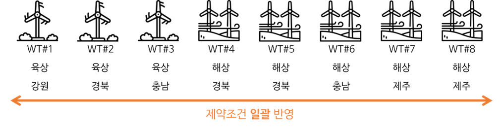
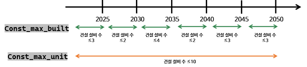
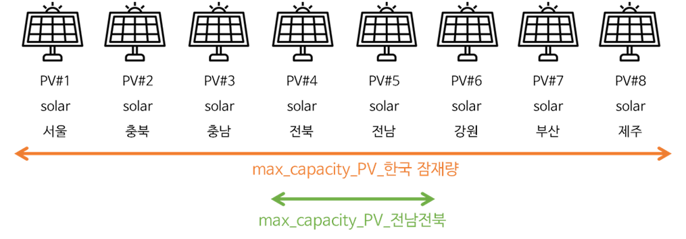

User Guide
What is Scenario
- 시나리오는 현실 세계에게서 존재하거나 발생할 수 있는 특정 조건이나 상황을 모사하여 모델을 실행하는 하나의 설정을 의미한다. 사용자는 여러 시나리오를 통해 다양한 환경 변화나 정책 조건, 시스템의 구성 요인의 변화에 따른 영향을 분석할 수 있다. OPEN은 다중 시나리오 분석을 유연하게 지원하기 위해, 시나리오별 데이터 의존성에 따라 입력 데이터를 구조적으로 분리하여 관리하고 있다. 예를 들어, 시나리오에 영향을 미치지 않는 데이터는
System Data폴더에, 시나리오별로 값이 달라지는 입력 데이터는resources/scenarios폴더에 각각 저장된다. 이러한 구조는 사용자로 하여금 여러 시나리오를 보다 명확하고 효율적으로 관리할 수 있도록 지원한다. - OPEN은 다양한 제약조건과 기능 모듈들을 제공하고 있으며, 사용자는 목적에 맞게 이들을 선택적으로 활성화하거나 비활성화할 수 있다. 예를 들어, 단기 운영만 분석하고자 하는 경우에는 장기 설비계획 모듈을 제외하고 실행할 수 있으며, 온실가스 배출량과 같은 정책 제약을 고려하지 않도록 설정할 수도 있다. 반대로, 특정 정책 효과를 평가하기 위해 새로운 제약조건(예: 최소 설비 건설량)을 사용자 정의로 추가할 수도 있다.
- OPEN은 사용자가 원하는 분석 목적에 따라 시나리오를 유연하게 구성하고 실행할 수 있도록 설계되어 있으며, 시나리오 정의에 필요한 설정 방법과 입력 파일의 구조에 대해서는 이어서 자세히 설명한다.
OPEN Inputs
- OPEN의 모든 입력 파일들은 CSV(Comma-Separated Values) 파일로 구성하고 있으며, 이는 사용자 친화적이고 다양한 툴에서 쉽게 편집할 수 있는 장점이 있다. 입력 파일은 크게 공통 데이터와 시나리오별 데이터로 구분되며, 폴더 경로에 따라 별도로 관리된다. 사용자의 이해를 돕기 위해 이 문서에서는 예시로 PowerGrid 라는 대상 시스템 내에서 다중 시나리오 중 하나인 ‘sub_scenario_1’를 가정한다.
- 공통 데이터는 시나리오에 따라 변하지 않는 입력 파일들을 의미하며, 예를 들어 노드 정보, 송전선로 구성, 설비의 기본 특성 파라미터 등이 포함된다. PowerGrid에 대한 해당 파일들은
System Data폴더 내에 위치한다. - 시나리오별 데이터는 시나리오마다 다르게 설정되는 데이터로, 연도별 전력수요, 설비 건설계획, 정책 옵션 등 이 여기에 해당된다. 이러한 파일들은
PowerGrid/resources/scenario/sub_scenario_1에서 관리되며, 다른 다중 시나리오들은 scenario의 하위 경로에 시나리오 폴더를 추가하면 된다. - OPEN은 시나리오에 영향을 주지 않는 입력 파일들은 System Data 폴더에서, 시나리오에 영향을 주는 파일들은
resources/scenarios폴더에서 관리하고 있다. 아래 그림은 모델의 입력데이터에 대한 폴더의 구조를 보여주고 있으며, 사용자는 폴더와 데이터 구조, 파일명, 데이터 형식은 준수해야 한다. - 사용자는 반드시 정해진 폴더 구조, 파일 이름, 데이터 형식을 준수해야 하며, OPEN은 이 구조를 기반으로 시뮬레이션 실행 시 자동으로 관련 데이터를 불러온다. 만약 구조가 임의로 변경되거나 형식에 맞지 않을 경우, 모델 실행 중 오류가 발생할 수 있으므로 주의가 필요하다. 단, 대상 시스템과 시나리오 이름은 변경할 수 있기 때문에, 해당 폴더명도 변경할 수 있다.
examples/
└── PowerGrid/
├── System Data/
│ ├── buses.csv
│ ├── carriers.csv
│ ├── generators-month-agc_max_pu.csv
│ ├── generators-month-agc_min_pu.csv
│ ├── generators-month-gf_max_pu.csv
│ ├── generators-month-gf_min_pu.csv
│ ├── generators-month-p_max_pu.csv
│ ├── generators-month-p_min_pu.csv
│ ├── generators-month-sfc.csv
│ ├── `generators.csv`
│ ├── lines.csv
│ ├── links.csv
│ ├── loads.csv
│ └── storages.csv
└── resources/
├── scenario_information.yaml
└── scenarios/
└── sub_scenario_1/
├── buses-year-lump_downward_reserve.csv
├── buses-year-lump_reserve.csv
├── carriers-year-capital_cost.csv
├── carriers-year-fom.csv
├── carriers-year-fuel_cost.csv
├── carriers-year-max_built.csv
├── carriers-year-max_capacity_2.csv
├── carriers-year-max_emission.csv
├── carriers-year-min_capacity.csv
├── carriers.csv
├── generators-hour-factor.csv
├── generators.csv
├── lines.csv
├── links.csv
├── loads-snapshots-p_set.csv
└── storages.csv
- 시나리오에 따라 영향을 받지 않는 데이터는
System Data폴더에서 관리하고, 주로 설비의 특성과 지역 구분에 대한 내용을 다루고 있다. 입력 파일들의 구체적인 설명과 데이터 형식은open\component_attrs폴더에서 다루고 있다.
| 파일명 | 설명 |
|---|---|
generators |
원자력, 석탄, LNG, LNG-CHP, 수력, IGCC, 바이오 등의 발전기의 운영특성 파라미터 |
storages |
양수 발전기, 배터리 등의 저장장치 운영 특성 파라미터 |
lines |
교류 송전선로의 파라미터 |
links |
Power flow에 영향받지 않은 에너지 전달 매개체 (HVDC, 1차 에너지 등) |
carriers |
연료원별 공통된 이용률, 비용 특성, 배출계수, 수명, 최소운영기간 등 입력 |
buses |
Bus별 전압, 전압 범위, 경도, 위도, Zone 구분 |
loads |
국내 도 단위 지역으로 전력수요 구분 |
generators-month-p_max_pu |
발전기(generators)의 월별 최대 출력값 (p.u.) |
generators-month-p_min_pu |
발전기(generators)의 월별 최소 출력값 (p.u.) |
generators-month-sfc |
발전기(generators)의 기동 단위 열량 (GCal) |
- 시나리오에 따라 변경할 수 있는 데이터와 옵션 설정에 대한 파일들은
resources/scenarios폴더에서 관리하고,scenarios에서 다중 시나리오에 따른 여러 하위 폴더들을 생성할 수 있다(e.g.,sub_scenario_1,sub_scenario_2).
| 파일명 | 설명 |
|---|---|
generators |
후보 발전기의 이름, 연료원, 입력 파라미터 정보 입력 |
storages |
후보 양수 발전기, 저장장치의 입력 파라미터 정보 입력 |
lines |
건설 예정인 송전선로에 대한 정보 입력 |
links |
건설 예정인 HVDC 선로 정보 입력 |
carriers |
사용자가 설정한 제약조건 이름 입력 |
generators-hour-factor |
재생에너지의 지역별 시간대별 발전 패턴 정보 입력 (%) |
loads-snapshots-p_set |
지역별 시간대별 전력수요에 대한 정보 입력 (MWh) |
buses-year-lump_reserve |
연도별 전국 상향예비력 요구량 (MWh) |
carriers-year-min_capacity |
연도별 연료원별 최소 누적 설비용량 (MW) |
carriers-year-min_capacity_2 |
연도별 연료원별 최소 누적 설비용량 (MW) |
carriers-year-max_capacity |
연도별 연료원별 최대 누적 설비용량 (MW) |
carriers-year-max_capacity_2 |
연도별 연료원별 최대 누적 설비용량 (MW) |
buses-year-lump_downward_reserve |
연도별 육지와 제주의 하향예비력 요구량 (MWh) |
carriers-year-capital_cost |
연료원별 연도별 설비 투자 가격 (원/MW) |
carriers-year-fom |
연료원별 연도별 고정 운영 가격 (원/MW) |
carriers-year-fuel_cost |
연료원별 연도별 연료 가격 (원/Gcal) |
carriers-year-max_emission |
계획기간 내 대표 연도별 배출량 (tCO₂eq) |
clustered_factor_xxxx_yyyy_z_Cw |
(사용자의 시나리오 설정에 따라 자동 생성) 축약된 지역별 재생에너지 이용률 프로파일xxxx: 계획 시작년도, yyyy: 계획 종료년도, z: 년 당 대표일 수, w: 연속일 수
|
snapshots_weightings_xxxx_yyyy_z_z’_5_C1 |
(사용자의 시나리오 설정에 따라 자동 생성) 축약된 재생에너지 이용률 프로파일xxxx: 계획 시작년도, yyyy: 계획 종료년도, z: 년 당 대표일 수, z’: 군집 중 상위 z’%, w: 연속일 수
|
What is component of OPEN
- OPEN은 다양한 구성 요소(
component)를 활용하여 전력 시스템을 표현하고 있다. 모든 구성 요소(e.g., bus, 발전기, 저장장치, 선로, 부하)는 network 객체(n)에 저장되며, 사용자는 해당 데이터를 조회, 수정, 시각화 할 수 있다.component는 정적인 특성을 가진 데이터와 시계열 특성을 가진 데이터로 구분된다. OPEN의 각component에 대한 메타 데이터(속성명, 설명, 타입 등)는 아래의 표에 정리되어 있다. 또한 사용자는n.components딕셔너리를 통해 확인할 수 있으며, 예시로 bus의 모든 속성에 대해 확인하려면n.components["Bus"]["attrs"]로 볼 수 있다.
📢 주의사항 -
{}안에 해당component나list_name을 대입하면 됨
- 정적인(static) 속성을 가진
component(e.g., bus, 발전기, 송전선로)는 n.{list_name} 형태로 저장되며, 예시로 bus는 n.buses에 저장된다. 이 pandas.DataFrame에서 행(index)는component의 고유 문자열 이름에 해당하며, 열(column)은component의 정적인 속성(attribute)에 해당한다. 예를 들어, n.buses.v_nom은 network의 bus 전압을 나타낸다. - 시계열(time-varying series) 속성을 가진
component는{list_name}에 접미사_t를 붙여{list_name}_t로 표현된다. 예를 들어, 부하는 시간대별로 다른 전력사용량을 가지는데, 이는n.loads_t.p_set로 확인 가능하다.
| component | list_name | 설명 | type |
|---|---|---|---|
Network |
networks |
모든 구성요소 및 기능들을 담고 있는 전체 네트워크 단위 | |
SubNetwork |
sub_networks |
bus 및 passive branch 주1)의 부분집합으로, 서로 연결된 부분들 (e.g., synchronous area) | |
Load |
loads |
전력을 소비하는 설비로 PQ 부하로 표현 | controllable_one_port |
Generator |
generators |
전력을 생산하는 설비 | controllable_one_port |
Storage |
storages |
고정된 명판 에너지와 전력 비율을 가진 저장장치 | controllable_one_port |
Bus |
buses |
모든 전기적 노드를 의미하며, 발전기·부하·선로 등 모든 요소는 bus에 연결됨 | |
Carrier |
carriers |
에너지 운반체 (e.g., 발전기, 교류/직류 송전선로 등)를 의미. bus는 직접적인 에너지 운반체를 갖고 있으며, 발전기는 주요 에너지 운반체를 표시. | |
Line |
lines |
가공선로와 케이블을 모두 포함하는 송전선로 | passive_branch |
LineType |
line_types |
표준 송전선로의 데이터셋으로 길이당 임피던스 값을 갖는 표준 선로 유형 | standard_type |
Link |
links |
두 bus 간 제어 가능한 유효전력 연결. 송전 전력 흐름 모델, 손실이 있는 에너지 converter, DC 연결의 간소화된 버전으로 사용할 수 있음. ※ 손실 없는 양방향 HVDC는 p_min_pu = -1, efficiency = 1로 설정※ Link는 무효전력을 생성하거나 소비하지 않는 것으로 가정 |
controllable_branch |
:mag_right: 참고사항 - passive_branch는 전압의 차이에 의해 전류가 흐르며, 자체적으로 유효전력 또는 무효전력을 제어할 수 없는 설비
- controllable_branch는 두 버스 간 전력흐름을 직접 제어할 수 있는 설비(HVDC 등)
- controllable_one_port는 최적화를 통해 결정되는 제어 가능한 단일 포트
- standard type는 통상적 설비 규격을 의미
- 각
component에 대한 구체적인 속성(attribute)은 순차적으로 제시되어 있다. 기본값은 사용자가 입력하지 않더라도 OPEN에서 제공하는 값으로, 사용자가 목적에 맞게 변경 가능하다. 사용자가 각 attribute에 대한 값을 비워둘 경우 OPEN은 기본값으로 값을 채운다. 속성별 데이터 유형(type)은 크게 문자형(string), 인덱스 기반 참조 데이터(pandas.Index), 실수형(float), 정수형(int), 논리형(boolean)으로 구분된다. 입력 데이터 중에서 사용자가 OPEN에서 반드시 입력해야 하는 경우 ‘Input(필수)’로, 사용자가 입력하지 않으면 기본값이 자동 적용되며 수정할 수 있는 경우에 ‘Input(선택 옵션)’으로 구분하였다. 사용자의 입력을 통해 OPEN에서 결정되는 파라미터나 OPEN의 결정변수는 ‘Output’으로 구분하였다. networks는 모든component를 포함하는 전체적인 컨테이너(container)다.
| 속성(attribute) | 설명 | 기본값 | 자료형 | 입출력 구분 | 단위 |
|---|---|---|---|---|---|
name |
네트워크명 | NaN | string | Input (필수) | NaN |
snapshots |
OPEN에서 사용하고 있는 time step으로 시계열 데이터는n.snapshots로 인덱싱 됨 | ["now"] | pandas.Index | Input (선택 옵션) | NaN |
candidate |
후보설비 판단 (T: 후보설비를 의미, F: 후보설비가 아님) | False | boolean | Input (필수) | NaN |
sub_networks는 OPEN에 의해 결정되므로, 사용자가 직접 입력할 수 없다.sub_networks는 bus와 passive_branch(e.g., 선로, 변압기)로 구성된network의 하위 집합으로, 버스의 carrier를 상속받는다.sub_networks는n.determine_network_topology를 통해 결정된다.
| 속성(attribute) | 설명 | 기본값 | 자료형 | 입출력 구분 | 단위 |
|---|---|---|---|---|---|
name |
sub_networks명 | NaN | string | Output | NaN |
carrier |
sub_network의 에너지 유형을 정의하며, bus에 의해 결정됨 (e.g., AC, DC) | AC | string | Output | NaN |
slack_bus |
slack bus명 | NaN | string | Output | NaN |
bus는network의 기본 노드로 발전기, 부하, 송전선로, 저장장치 같은component가 연결된다. 키르히호프 전류 법칙(Kirchhoff's Current Law)에 따라 Bus에 주입되는 전력과 인출되는 전력의 크기는 같아야 한다(에너지 보존 법칙).
| 속성(attribute) | 설명 | 기본값 | 자료형 | 입출력 구분 | 단위 |
|---|---|---|---|---|---|
name |
bus명 | n/a | string | Input (필수) | n/a |
v_nom |
bus의 정격 전압 | 1 | float | Input (선택 옵션) | kV |
x |
bus의 x좌표(e.g., 경도). SRID는 network.srid로 설정됨 |
0 | float | Input (선택 옵션) | n/a |
y |
bus의 y좌표(e.g., 위도). SRID는 network.srid로 설정됨 |
0 | float | Input (선택 옵션) | n/a |
carrier |
bus의 전력흐름 유형 (e.g., AC, DC) | AC | string | Input (required) | n/a |
v_mag_pu_set |
bus의 전압 설정값(set point). 정격전압 v_nom의 p.u. |
1 | static, series | Input (선택 옵션) | p.u. |
control |
PF 제어전략(P, Q, V). 발전기에서 상속되는 속성이므로 bus에서 설정해도 적용되지 않음 | PQ | string | Output | n/a |
p |
bus의 유효전력 (양수 = 공급) | 0 | series | Output | MW |
q |
bus의 무효전력 (양수 = 공급) | 0 | series | Output | MVar |
v_mag_pu |
bus의 실제 전압 | 1 | series | Output | p.u. |
v_ang |
위상각 | 0 | series | Output | radians |
system_marginal_price |
계통 한계 가격 | 0 | series | Output | KRW/MWh |
sub_network |
Bus에 속한 subnetwork (network.determine_network_topology()에 의해 설정) |
n/a | string | Output | n/a |
marginal_price |
모선 한계 가격 | 0 | series | Output | KRW/MWh |
zone |
운영 예비력 판단 기준 구역 | NaN | string | Input (선택 옵션) | n/a |
lump_reserve |
상향 예비력(up spinning reserve) 요구량 | 0 | static, series | Input (선택 옵션) | MW |
lump_downward_reserve |
하향 예비력(down spinning reserve) 요구량 | 0 | static, series | Input (선택 옵션) | MW |
- 발전기(
Generator)는 단일 버스에 연결되어, 발전기의carrier(e.g., coal, nuclear, PV)를 bus의 carrier(e.g., AC)로 변환하여 전력을 공급한다. 발전기는 최소 출력(p_nom * p_min_pu)부터 최대 출력(p_nom * p_max_pu) 사이의 범위에서 출력량을 조절할 수 있다. 전통적인 발전기처럼 정적인 특성을 가지는 발전기는 고정된 최소 출력과 최대 출력 사이의 값을 가지며, 이 때p_max_pu는 de-rating factor 역할도 수행한다. 반면에, 기상 상황에 의존하는 재생 에너지 설비는 시간에 따라 최대 출력의 범위가 달라진다. 예를 들어, OPEN에서 전통적인 발전기의 최대 출력은n.generator.loc[gen_name, "p_max_pu"]에 저장되지만, 재생에너지의 최대 출력은n.generators_t.p_max_pu[gen_name]에 저장되며 시간에 따라 다른 값을 가진다.
| 속성(attribute) | 설명 | 기본값 | 자료형 | 입출력 구분 | 단위 |
|---|---|---|---|---|---|
name |
발전기명 | NaN | string | Input (필수 옵션) | NaN |
bus |
발전기가 연결된 bus명 | NaN | string | Input (필수 옵션) | NaN |
control |
PF를 위한 P, Q, V 제어전략(e.g., PQ, PV, Slack) | PQ | string | Input (선택 옵션) | NaN |
carrier |
발전기 연료원(e.g., coal, nuclear, LNG, hydro ) | NaN | string | Input (필수 옵션) | NaN |
factor |
snapshots 별 이용률 | 0 | static, series | Input (선택 옵션) | p.u. |
sector |
재생에너지가 특정 지역의 이용률을 따르기 위한 지역 구분 | NaN | string | Input (선택 옵션) | NaN |
curtailment_ratio |
snapshots 동안 출력제어 가능한 비율 | 0 | float | Input (선택 옵션) | ratio |
candidate |
후보설비 판단(T: 후보설비를 의미, F: 후보설비가 아님) | 0 | boolean | Input (선택 옵션) | NaN |
start_date |
설비 운영 시작일 | 2000-01-01 12:00:00 | datetime | Input (선택 옵션) | NaN |
end_date |
설비 운영 종료일 | 2100-01-01 12:00:00 | datetime | Input (선택 옵션) | NaN |
p_nom |
발전기 설비용량 | 0 | float | Input (선택 옵션) | MW |
p_min_pu |
발전기의 최소 출력 p.u.로, committable=False이고 p_min_pu>0인 경우 must-run발전기를 의미 (전통적인 발전기는 시계열에 관계없이 일정한 값을 갖지만, 재생 에너지 발전기의 경우 snapshot에 따라 달라짐) | 0 | static, series | Input (선택 옵션) | p.u. |
p_max_pu |
발전기의 최대 출력 p.u. (전통적인 발전기는 고정된 값을 갖지만, 재생 에너지 발전기의 경우 snapshot에 따라 달라짐) | 1 | static, series | Input (선택 옵션) | p.u. |
min_up_time |
설비가 적어도 켜져 있어야 하는 snapshots 수 | 0 | int | Input (필수 옵션) | snapshots |
min_down_time |
설비가 적어도 꺼져 있어야 하는 snapshots 수 | 0 | int | Input (필수 옵션) | snapshots |
up_time_before |
계획기간 이전에 설비가 켜져 있었던 snapshots 수 | 0 | int | Input (선택 옵션) | NaN |
down_time_before |
계획기간 이전에 설비가 꺼져 있었던 snapshots 수 | 0 | int | Input (선택 옵션) | NaN |
committable |
급전 가능 여부(T: 급전가능, F: 급전불가능) | 0 | boolean | Input (선택 옵션) | NaN |
ramp_limit_up |
최대 출력 증가율 | 1 | static, series | Input (필수 옵션) | p.u. |
ramp_limit_down |
최대 출력 감소율 | 1 | static, series | Input (필수 옵션) | p.u. |
ramp_limit_start_up |
기동 시 최대 출력 증가율 | 1 | static, series | Input (필수 옵션) | p.u. |
ramp_limit_shut_down |
정지 시 최대 출력 감소율 | 1 | static, series | Input (필수 옵션) | p.u. |
lifetime |
설비의 설계수명 | 100 | float | Input (선택 옵션) | year |
min_operation_year |
설비 최소 가동 기간 | 100 | float | Input (선택 옵션) | year |
hurdle_rate |
최소 이용률 | 0 | float | Input (선택 옵션) | ratio |
parent_unit |
발전기의 정보가 부족한 경우 기존의 발전기 특성을 가져올 때 해당 발전기 명 | NaN | string | Input (선택 옵션) | NaN |
co2 |
이산화탄소(CO2) | 0 | float | Input (선택 옵션) | tonne/MWh |
nox |
질소산화물(NOx) | 0 | float | Input (선택 옵션) | tonne/MWh |
pm2.5 |
초미세먼지(PM2.5) | 0 | float | Input (선택 옵션) | tonne/MWh |
sox |
황산화물(SOx) | 0 | float | Input (선택 옵션) | tonne/MWh |
tsm |
총 부유 물질 (Total Suspended Matter) | 0 | float | Input (선택 옵션) | tonne/MWh |
forced_rate |
고장률 | 0 | float | Input (선택 옵션) | ratio |
maintenance_rate |
유지보수율 | 0 | float | Input (선택 옵션) | ratio |
fuel_cost |
열량가격 | 0 | static, series | Input (선택 옵션) | KRW/Gcal |
capacity_factor |
연간 용량 기여율 | 0 | static, series | Input (선택 옵션) | ratio |
qhc |
발전기 출력과 소비열량의 관계를 나타내는 2차 입출력 특성곡선식의 2차계수 | 0 | float | Input (필수) | Gcal/MWh^2 |
lhc |
발전기 출력과 소비열량의 관계를 나타내는 2차 입출력 특성곡선식의 1차계수 | 0 | float | Input (필수) | Gcal/MWh |
nlhc |
발전기 출력과 소비열량의 관계를 나타내는 2차 입출력 특성곡선식의 상수 | 0 | float | Input (필수) | Gcal/h |
agc_max_pu |
자동발전제어서비스 최대 제공 용량 p.u. | 0 | static, series | Input (선택 옵션) | p.u. |
agc_min_pu |
자동발전제어서비스 최소 제공 용량 p.u. | 0 | static, series | Input (선택 옵션) | p.u. |
gf_max_pu |
주파수추종서비스 응답가능 최대 용량 p.u. | 0 | static, series | Input (선택 옵션) | p.u. |
gf_min_pu |
주파수추종서비스 응답가능 최소 용량 p.u. | 0 | static, series | Input (선택 옵션) | p.u. |
tlf |
송전손실계수 | 1 | static, series | Input (선택 옵션) | ratio |
sfc |
열량가격당 기동연료비 | 0 | static, series | Input(선택 옵션) | KRW/Gcal |
u0 |
최초 기동 상태 | 0 | int | Input (선택 옵션) | NaN |
capital_cost |
1MW의 용량 당 자본 비용 | 0 | static, series | Input (선택 옵션) | KRW/MW |
fom |
연간 발전기 고정 운영비용 | 0 | static, series | Input (선택 옵션) | KRW/MW |
p_set |
PF를 위한 유효전력 설정값(set point) | 0 | static, series | Input (선택 옵션) | MW |
q_set |
PF를 위한 무효전력 설정값(set point) | 0 | static, series | Input (선택 옵션) | MVar |
sign |
부호 | 1 | float | Input (선택 옵션) | NaN |
nb_0 |
계획기간 이전에 건설된 있던 설비의 개수 | 1 | float | Input (선택 옵션) | number |
no |
해당 시점까지 운영중인 설비 개수 | 0 | series | Output | number |
nb |
해당 시점에 구축된 설비 개수 | 0 | series | Output | number |
nr |
해당 시점까지 퇴출되어 온 설비 개수 | 0 | series | Output | number |
p |
발전기의 유효전력 | 0 | series | Output | MW |
q |
발전기의 무효전력 | 0 | series | Output | MVar |
status |
발전기 상태 (1: 기동, 0: 정지) | 0 | series | Output | NaN |
status_startup |
발전기 기동 시작 상태 (1: 기동) | 0 | series | Output | NaN |
status_shutdown |
발전기 정지 시작 상태 (1: 정지) | 0 | series | Output | NaN |
p_ru |
상향 예비력 | 0 | series | Output | MW |
p_rd |
하향 예비력 | 0 | series | Output | MW |
emission |
배출량 | 0 | series | Output | ton |
gen_cost |
발전비용 | 0 | series | Output | KRW |
maintenance_capacity |
유지보수 중인 용량 | 0 | static, series | Input (선택 옵션) | MW |
max_built |
최대 구축 가능한 개수 (문제 풀이 step에 대해서) | 0 | float | Input (선택 옵션) | number |
max_units |
최대로 운영가능한 설비 수 | 0 | float | Input (선택 옵션) | number |
min_units |
최소로 운영가능한 설비 수 | 0 | float | Input (선택 옵션) | number |
max_capacity |
최대 설치용량 | 0 | float | Input (선택 옵션) | MW |
max_generation |
지정된 snapshots 동안 최대 발전량 | 0 | static, series | Input (선택 옵션) | MWh |
min_generation |
최소 발전량 | 0 | static, series | Input (선택 옵션) | MWh |
max_emission |
지정된 snapshots 동안 최대 배출량 | 0 | float | Input (선택 옵션) | ton |
min_up_units |
지정된 snapshots 동안 최소 기동중인 발전기 개수 | 0 | static, series | Input (선택 옵션) | number |
marginal_cost |
1MWh의 한계 비용 | 0 | static, series | Input (선택 옵션) | KRW/MWh |
curtailed_energy |
출력제어 된 에너지 | 0 | series | Output | MW |
conversion_code |
연료전환 식별코드 | NaN | string | Input (선택 옵션) | NaN |
annuity_factor |
연가화 비율 | 1 | float | Input (선택 옵션) | p.u. |
inertia_constant |
관성상수 | 0 | float | Input (필수) | s |
curtailment_price |
비중앙발전기 출력제어 단가 | 0 | static, series | Input (선택 옵션) | KRW/MWh |
max_financing_year |
금융조달기간 | NaN | float | Input (선택 옵션) | year |
retirement_cost |
설비폐지 시 요구되는 미납된 설비투자 비용 | 0 | series | Output | KRW |
gen_startup_cost |
기동 비용 | 0 | series | Output | KRW |
gen_shutdown_cost |
정지 비용 | 0 | series | Output | KRW |
transition_cost |
연료 전환 비용 | 0 | series | Output | KRW |
number_of_operation_set |
계획기간 동안 켜져야 할 must-run 발전기 수 | NaN | static, series | Input (선택 옵션) | MWh |
build_cost |
자본 비용 | 0 | series | Output | KRW |
fixed_cost |
고정 비용 | 0 | series | Output | KRW |
curtailed_cost |
출력제어 비용 | 0 | series | Output | KRW |
cyclic_state |
대표일들 사이에서 각 대표일의 초기값과 후기값 연결 여부를 표시 (T : 연결, F : 분리) | 0 | boolean | Input (선택 옵션) | NaN |
- 저장장치(
storage)는 단일 bus에 연결되며, 전력계통의 수급 불균형이 발생할 경우 연결된 버스에 전력을 공급하거나 흡수하여 수급균형을 지원한다. OPEN에서는 배터리와 양수발전기가 여기에 해당한다. 저장장치는 시간에 따라 에너지 저장량과 충전/방전 전력이 달라진다. 저장장치의 에너지 저장 용량(p_nom, 단위: MWh)은 저장장치가 최대출력으로 방전할 수 있는 시간(max_hours, 단위: h)과 정격 용량(p_nom, 단위: MW)의 곱으로 결정된다.
| 속성(attribute) | 설명 | 기본값 | 자료형 | 입출력구분 | 단위 |
|---|---|---|---|---|---|
name |
저장장치명 | NaN | string | Input (필수) | NaN |
bus |
저장장치가 연결된 버스명 | NaN | string | Input (필수) | NaN |
control |
PF를 위한 P, Q, V 제어전략 (e.g., PQ, PV, Slack) | PQ | string | Input (필수) | NaN |
carrier |
저장장치의 에너지 저장 방식 (e.g., PHS, battery-4h) | NaN | string | Input (필수) | NaN |
candidate |
후보설비 판단 (T: 후보설비를 의미, F: 후보설비가 아님) | False | boolean | Input (필수) | NaN |
start_date |
설비 운영 시작일 | 2000-01-01 00:00:00 | datetime | Input (optional) | NaN |
end_date |
설비 운영 종료일 | 2100-01-01 00:00:00 | datetime | Input (선택 옵션) | NaN |
p_nom |
설비의 정격 출력용량 | False | float | Input (선택 옵션) | MW |
lifetime |
설비 설계수명 | False | float | Input (선택 옵션) | years |
min_operation_year |
설비 최소 가동 기간 | False | float | Input (선택 옵션) | year |
p_dch_max_pu |
각 snapshot에서 최대방전용량 p.u. | 1 | static, series | Input (선택 옵션) | p.u. |
p_ch_max_pu |
각 snapshot에서 최대충전용량 p.u. | 1 | static, series | Input (선택 옵션) | p.u. |
p_dch_min_pu |
각 snapshot에서 최소방전용량 p.u. | False | static, series | Input (선택 옵션) | p.u. |
p_ch_min_pu |
각 snapshot에서 최소충전용량 p.u. | False | static, series | Input (선택 옵션) | p.u. |
e_head_max_pu |
설비의 최대 에너지 저장량 p.u. | 1 | static, series | Input (선택 옵션) | p.u. |
e_head_min_pu |
설비의 최소 에너지 저장량 p.u. | False | static, series | Input (선택 옵션) | p.u. |
p_set |
PF를 위한 유효전력 설정값(set point) | False | static, series | Input (선택 옵션) | MW |
q_set |
PF를 위한 무효전력 설정값(set point) | False | static, series | Input (선택 옵션) | MVar |
sign |
부호 | 1 | float | Input (선택 옵션) | NaN |
marginal_cost |
1MWh에 대한 한계비용 | False | static, series | Input (선택 옵션) | KRW/MWh |
capital_cost |
1MW에 대한 건설비용 | False | static, series | Input (선택 옵션) | KRW/MW |
forced_rate |
설비 고장률 | False | float | Input (선택 옵션) | ratio |
maintenance_rate |
설비 유지보수율 | False | float | Input (선택 옵션) | ratio |
fom |
연간 용량당 고정 운영비용 | False | static, series | Input (선택 옵션) | KRW/MW |
capacity_factor |
연간 용량 기여율 | False | static, series | Input (선택 옵션) | ratio |
nb_0 |
계획기간 이전에 건설된 설비의 개수 | False | float | Input (선택 옵션) | number |
no |
해당 시점까지 운영중인 발전기 개수 | False | series | Output | number |
nb |
해당 시점에 건설된 발전기 개수 | False | series | Output | number |
nr |
해당 시점까지 퇴출되어 온 발전기 개수 | False | series | Output | number |
p_ru |
상향 예비력 | False | series | Output | MW |
p_rd |
하향 예비력 | False | series | Output | MW |
maintenance_capacity |
유지보수 중인 용량 | False | series | Input (선택 옵션) | MW |
max_built |
최대 구축 가능한 개수 (문제 풀이 step에 대해서) | False | float | Input (선택 옵션) | number |
min_built |
최소 구축해야 하는 개수 | False | float | Input (선택 옵션) | number |
max_units |
최대로 운영가능한 설비 수 | False | float | Input (선택 옵션) | number |
min_units |
최소로 운영가능한 설비 수 | False | float | Input (선택 옵션) | number |
state_of_charge_initial |
저장장치의 초기 저장량 | False | float | Input (선택 옵션) | MWh |
cyclic_state |
대표일들 사이에서 각 대표일의 초기값과 후기값 연결 여부를 표시 (T : 연결, F : 분리) | False | boolean | Input (선택 옵션) | NaN |
max_hours |
정격 출력으로 방전 가능한 시간 | 1 | float | Input (선택 옵션) | hours |
efficiency_store |
저장장치의 충전 효율 | 1 | static, series | Input (선택 옵션) | p.u. |
efficiency_dispatch |
저장장치의 방전 효율 | 1 | static, series | Input (선택 옵션) | p.u. |
standing_loss |
시간 당 자가 방전 효율 | False | static, series | Input (선택 옵션) | p.u. |
state_of_charge_set |
State of charge set points for snapshots in the OPF. | NaN | static, series | Input (선택 옵션) | MWh |
p |
저장장치의 유효전력 | False | series | Output | MW |
q |
저장장치의 무효전력 | False | series | Output | MVar |
state_of_charge |
저장장치의 에너지 저장량 | NaN | series | Output | MWh |
sr |
속도조정률 | False | float | Input(선택 옵션) | p.u. |
gf_max_pu |
주파수추종서비스 응답가능 최대 용량 p.u. | False | static, series | Input(선택 옵션) | p.u. |
annuity_factor |
연가화 비율 | 1 | float | Input (선택 옵션) | p.u. |
max_financing_year |
금융조달기간 | NaN | float | Input (선택 옵션) | year |
retirement_cost |
설비폐지 시 요구되는 미납된 설비투자비용 | False | series | Output | p.u. |
inertia_constant |
관성상수 | False | float | Input (선택 옵션) | s |
build_cost |
건설비용 | False | series | Output | p.u. |
fixed_cost |
고정비용 | False | series | Output | p.u. |
- 부하(
load)는 단일 bus에 연결되며, PQ부하로서 유효전력과 무효전력을 소비한다. 또한, OPEN 확장에 있어 전력시스템의 부하뿐만 아니라, 수소나 열 등 다른 에너지 수요를 모델링하는 데에도 활용될 수 있다.
| 속성(attribute) | 설명 | 기본값 | 자료형 | 입출력 구분 | 단위 |
|---|---|---|---|---|---|
name |
부하명 | NaN | string | Input (필수) | NaN |
bus |
부하가 접속된 bus명 | NaN | string | Input (필수) | NaN |
carrier |
부하가 소비하는 에너지 유형(e.g., AC, DC) | NaN | string | Input (필수) | NaN |
p_set |
PF를 위한 유효전력 설정값(set point) | 0.0 | static, series | Input (선택 옵션) | MW |
q_set |
PF를 위한 무효전력 설정값(set point) | 0.0 | static, series | Input (선택 옵션) | MVar |
p |
유효전력 | 0.0 | series | Output | MW |
q |
무효전력 | 0.0 | series | Output | MVar |
sign |
부호 | -1.0 | float | Input (선택 옵션) | NaN |
lost_load |
공급지장비율 | 0.0 | float | Input (선택 옵션) | p.u. |
voll |
공급지장 페널티 가격 | 0.0 | static, series | Input (선택 옵션) | KRW/MW |
load_shedding |
부하삭감량 | 0.0 | series | Output | MW |
penalty_cost |
공급지장 페널티 비용 | 0.0 | series | Output | KRW |
- 션트 임피던스(
shunt impedance)는 단일 bus에 연결되며, 전압에 의존하는 어드미턴스(voltage-dependent admittance)를 가진다. 션트 임피던스는 어드미턴스로도 표현될 수 있으며, y = G + jB로 나타낸다. 션트 임피던스의 전력 소비는 $s_i=|V_i |^2 y_i^*=p_i+jq_i= |V_i |^2 (g_i-jb_i)$와 같다. 여기서 유효전력($p_i= |V_i |^2 g_i$)이 양의 값을 가지면 션트 임피던스가 bus에서 유효전력을 소비하고, 무효전력($q_i=|V_i |^2 b_i$)가 양의 값을 가지면 캐패시터처럼 동작하며 무효전력을 공급하는 것을 의미한다.
| 속성(attribute) | 설명 | 기본값 | 자료형 | 입출력 구분 | 단위 |
|---|---|---|---|---|---|
name |
션트 임피던스 명 | NaN | string | Input (필수) | NaN |
bus |
발전기가 연결되어 있는 bus명 | NaN | string | Input (필수) | NaN |
g |
션트 컨덕턴스 | 0.0 | float | Input (선택 옵션) | ℧ |
b |
션트 서셉턴스 | 0.0 | float | Input (선택 옵션) | S |
sign |
부호 | -1.0 | float | Input (선택 옵션) | NaN |
p |
유효전력 | 0.0 | series | Output | MW |
q |
무효전력 | 0.0 | series | Output | MVar |
g_pu |
g의 p.u. | 0.0 | float | Output | p.u. |
b_pu |
b의 p.u. | 0.0 | float | Output | p.u. |
build_cost |
건설비용 | 0.0 | series | Output | KRW |
- 선로(
line)은 OPEN에서 송전선로를 의미한다. 선로는 AC bus나 DC bus에 연결될 수 있으며, 두 bus(bus0,bus1)사이를 연결하여 전력을 흐르게 한다. 선로의 전력흐름은 직접적으로 제어할 수 없으며, 키르히호프 전압 법칙에 따라 수동적으로 결정된다.
| 속성(attribute) | 설명 | 기본값 | 자료형 | 입출력 구분 | 단위 |
|---|---|---|---|---|---|
name |
선로 명 | NaN | string | Input (필수) | NaN |
bus0 |
선로의 시작점 버스 명 | NaN | string | Input (필수) | NaN |
bus1 |
선로의 종단점 버스 명 | NaN | string | Input (필수) | NaN |
candidate |
후보설비 판단 (T: 후보설비를 의미, F: 후보설비가 아님) | False | boolean | Input (필수) | NaN |
x |
직렬 리액턴스 (AC 선로에서 x는 0이 될 수 없음) | False | float | Input (필수) | Ω |
r |
직렬 저항 | False | float | Input (필수) | Ω |
g |
션트 컨덕턴스로, 션트 어드미턴스의 실수부 | False | float | Input (선택 옵션) | S |
b |
션트 서셉턴스로, 션트 어드미턴스의 허수부 | False | float | Input (선택 옵션) | S |
x_pu |
리액턴스의 p.u. | False | float | Input (선택 옵션) | p.u. |
r_pu |
저항의 p.u. | False | float | Input (선택 옵션) | p.u. |
b_pu |
션트 서셉턴스의 p.u. | False | float | Input (선택 옵션) | p.u. |
g_pu |
션트 컨덕턴스의 p.u. | False | float | Input (선택 옵션) | p.u. |
start_date |
설비의 운영 시작일 | 2000-01-01 12:00:00 | datetime | Input (선택 옵션) | NaN |
lifetime |
설비 수명 | 100 | float | Input (선택 옵션) | years |
length |
선로 길이 (type이 지정된 경우에 사용되며, CAPEX를 계산할 때 활용 됨) | False | float | Input (선택 옵션) | km |
carrier |
선로 유형(e.g., AC) | AC | string | Input (필수 옵션) | NaN |
type |
선로의 표준 유형 | NaN | string | Input (필수) | NaN |
v_ang_min |
선간 최소 위상 차 | -inf | float | Input (선택 옵션) | Degrees |
v_ang_max |
선간 최대 위상 차 | inf | float | Input (선택 옵션) | Degrees |
capital_cost |
1MVA 용량 당 건설 비용 | False | static, series | Input (선택 옵션) | KRW/MVA |
fom |
고정운영비용 | False | static, series | NaN | KRW/MW |
num_parallel |
병렬 회선 수 (type가 비어 있으면, 이 값은 무시됨) | 1 | float | Input (선택 옵션) | NaN |
s_nom |
선로의 피상전력 크기로, 실제로 흐를 수 있는 최대 전력량 | False | float | Input (선택 옵션) | MVA |
s_nom_min |
s_nom_extendable = True에서 확장 가능한 최소 용량 | False | static, series | Input (선택 옵션) | MVA |
s_nom_max |
s_nom_extendable = True에서 확장 가능한 최대 용량 | inf | static, series | Input (선택 옵션) | MVA |
bin_install |
후보 선로의 건설 유무 | False | series | Output | int |
p0 |
bus0에서 선로로 흐르는 유효전력 | False | series | Output | MW |
q0 |
bus0에서 선로로 흐르는 무효전력 | False | series | Output | MVar |
p1 |
선로에서 bus1 로 흐르는 유효전력 | False | series | Output | MW |
q1 |
선로에서 bus1 로 흐르는 무효전력 | False | series | Output | MVar |
x_pu_eff |
선로의 리액턴스 p.u. | False | float | Output | p.u. |
r_pu_eff |
선로의 저항 p.u. | False | float | Output | p.u. |
s_max_pu |
선로에 흐를 수 있는 최대 전력의 비율 | 1 | static, series | Input (선택 옵션) | p.u. |
mu_lower |
선로 용량 하한 제약에 대한 shadow price | False | series | Output | KRW/MVA |
mu_upper |
선로 용량 상한 제약에 대한 shadow price | False | series | Output | KRW/MVA |
s_nom_opt |
최적화된 피상전력 | False | series | Output | MVA |
annuity_factor |
연가화 비율 | 1 | float | Input (선택 옵션) | p.u. |
max_financing_year |
금융조달기간 | NaN | float | Input (선택 옵션) | year |
build_cost |
건설비용 | False | series | Output | KRW |
link는 두 버스(bus0,bus1) 사이에서 제어 가능한 방향성 에너지 흐름을 모델링한다. 여기서link는 다른carrier를 가질 수 있으며, 손실 또는 한계비용을 포함할 수 있다.link는 제어 가능한 전력 흐름을 갖는 모든 요소에 사용할 수 있으며, 열 펌프, 전해조, 단방향 HVDC, 양방향 HVDC로 모델링 할 수 있다.link는 무효전력을 생산하거나 소비하지 않는다.
| 속성(attribute) | 설명 | 기본값 | 자료형 | 입출력 구분 | 단위 |
|---|---|---|---|---|---|
name |
link 명 | NaN | string | Input (필수) | NaN |
bus0 |
Link의 시작점 버스 명 | NaN | string | Input (필수) | NaN |
bus1 |
Link의 종단점 버스 명 | NaN | string | Input (필수) | NaN |
type |
Link 표준 유형 | NaN | string | Input (필수) | NaN |
efficiency |
bus0에서 bus1로의 전력 흐름 효율 (snapshot에 따라 변할 수 있음 | 1 | static, series | Input (필수) | p.u. |
carrier |
Link를 통해 전달되는 전력 흐름 유형 (e.g., HVDC는 DC로 표현) | NaN | string | Input (필수) | NaN |
lifetime |
설비 수명 | 100 | float | Input (선택 옵션) | year |
min_operation_year |
설비 최소 가동 연도 | 100 | float | Input (선택 옵션) | year |
p_nom |
Link에 흐를 수 있는 유효전력 용량(limit) | 0 | float | Input (선택 옵션) | MW |
p_set |
PF에서 p0 방향의 급전 설정값 | 0 | static, series | Input (선택 옵션) | MW |
p_min_pu |
최소 급전 p.u. (음수값이면, 역방향 전력흐름 허용) | -1 | static, series | Input (선택 옵션) | p.u. of p_nom |
p_max_pu |
최대 급전 p.u. (음수값이면, 역방향 전력흐름 허용) | 1 | static, series | Input (선택 옵션) | p.u. of p_nom |
marginal_cost |
bus0에서 bus1방향으로 1MWh 전송시 한계비용 | 0 | static, series | Input (선택 옵션) | p.u./MWh |
stand_by_cost |
전력흐름이 0일 때(link가 대기상태)의 운영비용 | 0 | static, series | Input (선택 옵션) | p.u./h |
length |
Link의 선로 길이(capital cost계산시 사용) | 0 | float | Input (선택 옵션) | km |
terrain_factor |
지형 요인에 따른 자본비용 증가 요인 | 1 | float | Input (선택 옵션) | p.u. |
start_up_cost |
기동 비용(committable =True에서만 작동) | 0 | float | Input (선택 옵션) | p.u. |
shut_down_cost |
정지 비용 (committable =True에서만 작동) | 0 | float | Input (선택 옵션) | p.u. |
min_up_time |
설비가 켜져 있어야 하는 최소한의 snapshots 수 | 0 | int | Input (선택 옵션) | snapshots |
min_down_time |
설비가 꺼져 있어야 하는 최소한의 snapshots 수 | 0 | int | Input (선택 옵션) | snapshots |
up_time_before |
계획기간 이전에 발전기가 켜져 있었던 snapshots 수 (committable =True이고, min_up_time ≠0에서만 동작) | 0 | int | Input (선택 옵션) | snapshots |
down_time_before |
계획기간 이전에 발전기가 꺼져 있었던 snapshots 수(committable =True이고, min_down_time ≠0에서만 작동) | 0 | int | Input (선택 옵션) | snapshots |
ramp_limit_up |
최대 출력 증가율(nan인 경우 미작동) | 1 | static, series | Input (선택 옵션) | p.u. |
ramp_limit_down |
최대 출력 감소율(nan인 경우 미작동) | 1 | static, series | Input (선택 옵션) | p.u. |
ramp_limit_start_up |
최대 출력 증가율 (committable =True에서만 작동) | 1 | static, series | Input (선택 옵션) | p.u. |
ramp_limit_shut_down |
최대 출력 감소율 (committable =True에서만 작동) | 1 | static, series | Input (선택 옵션) | p.u. |
p0 |
bus0에서 link로 흐르는 유효전력 | 0 | series | Output | MW |
p1 |
link에서 bus1 로 흐르는 유효전력 | 0 | series | Output | MW |
p_nom_opt |
최적화된 유효전력 용량 | 0 | float | Output | MW |
status |
발전기 상태 (1: 기동, 0: 정지) (committable =True에서만 동작) | 1 | series | Output | NaN |
status_startup |
기동여부 (1 is on, or 0 is off) | 0 | series | Output | NaN |
status_shutdown |
정지여부 (1 is on, or 0 is off) | 0 | series | Output | NaN |
mu_lower |
p_nom의 하한제약 그림자 가격 | 0 | series | Output | p.u./MW |
mu_upper |
p_nom의 상한제약 그림자 가격 | 0 | series | Output | p.u./MW |
mu_p_set |
고정 송전량(p_set)의 그림자 가격 | 0 | series | Output | p.u./MWh |
mu_ramp_limit_up |
최대 출력증가율의 그림자 가격 | 0 | series | Output | p.u./MWh |
mu_ramp_limit_down |
최대 출력증가율의 그림자 가격 | 0 | series | Output | p.u./MWh |
candidate |
후보설비 판단 (T: 후보설비를 의미, F: 후보설비가 아님) | 0 | boolean | Input (필수) | NaN |
capital_cost |
1MW의 용량 당 자본 비용 | 0 | static, series | Input (선택 옵션) | p.u./MW |
start_date |
설비 운영 시작일 | 2000-01-01 12:00:00 | datetime | Input (선택 옵션) | NaN |
end_date |
설비 운영 종료일 | 2100-01-01 12:00:00 | datetime | Input (선택 옵션) | NaN |
committable |
급전 가능 여부 (T: 급전가능, F: 급전불가능) | 0 | boolean | Input (선택 옵션) | NaN |
qhc |
link 출력과 소비열량의 관계를 나타내는 2차의 입출력 특성곡선식의 2차계수 | 0 | float | Input (필수) | Gcal/MWh2 |
lhc |
link 출력과 소비열량의 관계를 나타내는 2차의 입출력 특성곡선식의 1차계수 | 0 | float | Input (필수) | Gcal/MWh |
nlhc |
발전기 출력과 소비열량의 관계를 나타내는 2차의 입출력 특성곡선식의 상수 | 0 | float | Input (필수) | Gcal/h |
agc_max_pu |
자동발전제어서비스 최대 제공 용량 | 0 | static, series | Input (선택 옵션) | p.u. |
agc_min_pu |
자동발전제어서비스 최소 제공 용량 | 0 | static, series | Input (선택 옵션) | p.u. |
gf_max_pu |
주파수추종서비스 응답가능 최대 용량 | 0 | static, series | Input (선택 옵션) | p.u. |
gf_min_pu |
주파수추종서비스 응답가능 최소 용량 | 0 | static, series | Input (선택 옵션) | p.u. |
nb_0 |
계획기간 이전에 건설된 설비의 개수 | 1 | float | Input (선택 옵션) | number |
no |
해당 시점까지 운영중인 설비 개수 | 0 | series | Output | number |
nb |
해당 시점에 구축된 설비 개수 | 0 | series | Output | number |
nr |
해당 시점까지 퇴출되어 온 설비 개수 | 0 | series | Output | number |
max_built |
최대 구축 가능한 개수 | 0 | float | Input (선택 옵션) | number |
min_built |
최소 구축해야 하는 개수 | 0 | float | Input (선택 옵션) | number |
max_units |
최대 운영가능한 개수 | 0 | float | Input (선택 옵션) | number |
min_units |
최소한 운영되어야 하는 개수 | 0 | float | Input (선택 옵션) | number |
max_capacity |
최대 설치용량 | 0 | float | Input (선택 옵션) | MW |
forced_rate |
고장률 | 0 | float | Input (선택 옵션) | ratio |
maintenance_rate |
유지보수율 | 0 | float | Input (선택 옵션) | ratio |
sfc |
열량가격당 기동연료비 | 0 | static, series | Input (선택 옵션) | KRW/Gcal |
fuel_cost |
열량가격 | 0 | static, series | Input (선택 옵션) | KRW/Gcal |
parent_unit |
발전기의 정보가 부족한 경우 기존의 발전기 특성을 가져올 때 해당 발전기 명 | NaN | string | Input (선택 옵션) | NaN |
fom |
연간 고정 운영비용 | 0 | static, series | Input (선택 옵션) | KRW/MW |
p_ru |
상향 예비력 | 0 | series | Output | MW |
p_rd |
하향 예비력 | 0 | series | Output | MW |
gen_cost |
발전비용 | 0 | series | Output | won |
capacity_factor |
연간 용량 기여율 | 0 | static, series | Input (선택 옵션) | ratio |
hurdle_rate |
최소 이용률 | 0 | float | Input (선택 옵션) | ratio |
reserve_reg |
1차예비력 | 0 | series | Output | MW |
reserve_pri |
주파수제어예비력 | 0 | series | Output | MW |
reserve_sec |
2차 예비력 | 0 | series | Output | MW |
reserve_ter |
3차 예비력 | 0 | series | Output | MW |
reserve_frs |
속응성 예비력 | 0 | series | Output | MW |
annuity_factor |
연가화 비율 | 1 | float | Input (선택 옵션) | p.u. |
max_financing_year |
금융조달기간 | NaN | float | Input (선택 옵션) | year |
retirement_cost |
설비폐지 시 요구되는 미납된 설비투자비용 | 0 | series | Output | KRW |
gen_startup_cost |
기동비용 | 0 | series | Output | KRW |
gen_shutdown_cost |
정지비용 | 0 | series | Output | KRW |
build_cost |
건설비용 | 0 | series | Output | KRW |
fixed_cost |
고정비용 | 0 | series | Output | KRW |
cyclic_state |
대표일들 사이에서 각 대표일의 초기값과 후기값 연결 여부를 표시 (T : 연결, F : 분리) | 0 | boolean | Input (선택 옵션) | NaN |
Unit Conventions
- OPEN내에서 광범위하게 사용하고 있는 주요 데이터의 단위는 아래 표와 같다.
| 항목 | 단위 |
|---|---|
| 전력(Power) | MW, MVA, MVar |
| 에너지(Energy) | MWh |
| 시간(Time) | h |
| 전압(Voltage) | kV |
| 위상각(Angle) | rad |
| 임피던스(Impedance) | Ω |
| 온실가스 배출량(CO2-equivalent emissions) | tonCO2/MWh |
- 단위법(p.u.)은 어떤 양을 나타내는데 절대량이 아닌 기준량에 대한 비로 나타내는 방법이다. OPEN에서는 일부 데이터에 대해 전압, 임피던스, 용량 등을 단위법으로 표현하며, 각
component에 따라 기준값이 다르게 적용된다.
Key naming rule of OPEN
- OPEN은 일반적인 전력시스템에서 사용되는 다양한 연료원(
carrier)을 지원하며, 사용자는 전력시스템에서 설비에 따른 여러 carrier를 직접 생성 혹은 수정하여 사용할 수 있다. OPEN에서 기본적으로 제공하는 연료원별 코드명은 아래표와 같으며, 사용자는 정의한carrier를 준수하여 입력파일을 사용해야 한다. OPEN에서 정의한carrier에 대한 naming rule을 준수하지 않을 경우 OPEN은 해당 연료원을 인식할 수 없어 오류가 발생한다. 발전기나 저장장치의carrier속성에 입력할 수 있는 모든 연료원은 반드시 아래 명칭을 따라야 한다.
| 연료원 | OPEN 코드명 (carrier) |
|---|---|
| 원자력 | nuclear |
| 소형 원자로 | nuclear-smr |
| 석탄 | coal |
| LNG | LNG |
| LNG 열병합 | LNG-chp |
| 수력 | hydro |
| 바이오중유 | bioheavyoil |
| 바이오에너지 | bioenergy |
| 유류 | oil |
| 석탄가스화(IGCC) | igcc |
| 태양광 | solar |
| 육상풍력 | onwind |
| 고정식 해상풍력 | offwind-fixed |
| 부유식 해상풍력 | offwind-floating |
| 암모니아 혼소 | coal-ammonia 50 |
| 암모니아 전소 | coal-ammonia 100 |
| 수소 혼소 | LNG-H2 50 |
| 수소 전소 | LNG-H2 100 |
| 양수 | PHS |
| 저장장치(방전시간 X시간) | battery-Xh (X = 최대 방전시간) |
| 연료전지 | fuelcell |
| 해양 | marine |
What is scenario file
-
시나리오에 대한 정보로는 대표적으로 계획기간, 입력파일의 경로(고정 입력데이터, 시나리오 입력 데이터), 솔버 옵션, 시나리오의 제약조건 및 후보설비 정보, 연료전환 계획 등을 포함하고 있다. OPEN은 다양한 시나리오의 정보를 yaml 형식으로 하나의 파일을 통해 관리할 수 있도록 지원한다. yaml 형식의 파일은 들여쓰기와 key-value 쌍으로 이루어져 있는데, 사용자는 이를 통해 단순성과 가독성을 높여 손 쉽게 시나리오를 설정할 수 있다. 시나리오 정보에 대한 파일은 PowerGrid/resources 경로에 위치하며, 설명을 위해 시나리오 정보를 담은 예제 파일을 config_test.yaml로 정의한다.
📢 주의사항 - 시나리오 정보 파일의 경로는 고정이며, 파일명은 사용자가 정의할 수 있다. - 아래 내용부터는 시나리오 정보 파일에서 시나리오 정보에 따른 key-value를 설명한다. OPEN 실행을 위해 key에 따른 value가 적절한 형식으로 반드시 작성되어야 한다. 그러나 (optional)이라고 적혀 있는 key는 사용자 편의를 위해 추가적으로 제공하는 기능이기 때문에 해당 기능이 필요할 때만 value를 입력하면 된다.
-
계획기간 설정
-
OPEN에서 실행하고자 하는 장기전원계획 혹은 단기운영계획의 계획기간을 설정한다. 계획기간의 시작일 key는 start_date, 계획기간의 종료일은 end_date이다. 이 때 end_date는 계획기간의 종료일에서 1일 뒤의 시점을 작성해야 한다. 두 key의 value를 작성할 때, 사용자는 yyyy-mm-dd형식으로 작성해야 한다.
:mag_right: 참고사항 -
inclusive는 특정시점의 경계값을 포함할지 여부를 지정하는 옵션으로, left는 종료일 당일은 포함하지 않는 것을 의미한다. 앞서 설명했듯이, end_date는 계획기간 종료일에서 1일 뒤의 옵션을 적어야 하므로, 해당 key는 무시하도록 한다.python snapshots: start: 2024-01-01 end: 2051-01-01 inclusive: 'left' -
할인율 설정
-
OPEN에서 필요한 비용을 계산할 때는 미래비용을 현재가치로 환산하는 과정을 거친다. 이를 위해
discount_rate에 사용하고자 하는 할인율을 비율값(ratio)로 입력해야 한다.python discount_rate : 0.045 -
대표년도
- 할인율 계산을 적용하는 기준년도는
basis_year에 입력해야 한다. -
장기전원계획에서 계획기간내 대표년도를 year_list에 입력해야 한다. 작성형식은 yyyy이며, 계획기간을 벗어나는 연도를 작성할 수 없다.
-
입력파일 경로 및 시나리오명 지정
- 입력데이터 중에서 고정 데이터의 폴더명은
csv_folder_name에 입력하고, 시나리오 폴더의 경로는{input:scenarios}에 입력한다. -
사용자가 정의한 시나리오 명은 scenario_name에 입력해야 하며, 향후 OPEN의 결과는
scenario_name과 같은 이름의 폴더에서 제공된다. -
(optional) 모델 결과를 수신하고자 하는 이메일 계정 입력
-
OPEN 실행시 진행 상황에 대해 이메일로 수신하고자 하는 경우, 사용자의 Gmail계정 정보를 시나리오 설정 파일에 입력해야 한다. 이메일 주소는
{send_email:email_address}에, 비밀번호는{send_email:password}에 입력해야 한다. 이때,password에는 일반 로그인용 비밀번호가 아닌, 앱 비밀번호를 입력해야 한다. > :mag_right: 참고사항 > Google 계정 → 보안 → 앱 비밀번호 생성 > -
(optional) 후보 설비 생성
- 장기전원계획 수립에 있어 후보설비 건설을 결정할 때 후보설비의 목록을 생성하는 방법은 입력파일(csv 형식) 혹은 시나리오 정보 파일(yaml형식)을 이용해야 한다. 후보설비를 설정하는 자세한 방법은 후보설비 시나리오에서 확인할 수 있으며, 여기서는 시나리오 정보 파일을 이용할 때 사용하는 key-value의 의미에 대해서만 다룬다.
-
{electricity:extendable_carriers}에 후보설비를 입력하고자 하는 설비별 carrier를 입력해야 한다. 여기서 입력한 후보설비의 carrier는 모든 bus를 대상으로 정의된다. -
특정 bus에 특정 후보설비를 건설하는 것을 제한할 경우에는
{electricity:excluded_buses}에 건설을 희망하지 않는 bus를 입력해야 한다. 예를 들어, slack bus에 발전기 건설을 희망하지 않는 경우에는 아래 그림처럼 해당 bus를 입력해야 한다. -
{electricity:max_branches}는 후보 송전선로의 최대 건설 가능 선로 수를 의미한다. -
앞서
{electricity:extendable_carriers}에서 입력한 후보설비의carrier에 대한 정보를 입력해주는 과정이 반드시 필요하다. 이를 위해extendable_carriers에 정의한 각 후보설비의carrier별 attribute, 제약조건을{electricity}블록 내에 key-value로 입력해야 한다. -
(optional) 연료전환
- 장기전원계획에서 OPEN은 연료전환 경로 결정을 지원하며, 자세한 설정 방법은 연료전환 시나리오에서 확인할 수 있으며, 연료전환 설정에 있어 사용해야 하는 key-value의 의미에 대해서만 다룬다.
{conversion:scheduled_conversion}은 사용자가 국가계획이나 발전사의 계획 혹은 사나리오 설정 등 강제적인 연료전환계획 반영 여부를 나타낸다. 해당 key의 value를 True로 입력하면 연료전환 계획을 전원계획 수립에 있어 반드시 반영함을 의미하고, False로 입력하면 연료전환 계획을 전원계획 수립에 반영하지 않는 것을 의미한다.- 연료전환을 결정하고자 하는 대상 연료원(
carrier)을{conversion:conversion_carriers}의 value로 입력해야 한다. OPEN은 여기서 입력한 대상 연료원에 해당하는 발전기의 연료전환 경로를 내생적으로 결정하게 된다. - OPEN은 강제적인 연료전환 계획을 반영할 때, 연료전환 전 발전기와 연료전환 후 발전기에 대해 1:1로 매칭하여 연료전환 결정에 반영한다. 사용자의 시나리오 설정 방식에 따라 2개 이상의 호기가 하나의 설비로 연료전환이 되는 경우에는 1:1 매칭이 어려운데, 이 경우 연료전환 전 발전기들에 대해 1호기만 제외하고 남은 호기들은
{conversion:excluded_units}에 작성해야 한다(남은 호기는 무작위로 작성하면 됨). 예를 들어, 세 개의 석탄 발전기(A-1, A-2, A-3)가 하나의 LNG 발전소(B-1)로 LNG 발전기로 연료전환 하는 상황을 가정한다. 이 때 OPEN에서는{conversion:excluded_units}에 [A-2, A-3]을 작성하면 된다. - 앞서
conversion_carriers에서 지정한 연료원의 설비가 연료전환을 할 수 있는 모든 경로를 지정해야 한다. 이를 위해{conversion:transferable_states}의 하위 블록으로 연료전환 대상 연료원을 key값(연료전환 전 연료원)으로, 대상 연료원의 전환 경로를 value(연료전환 후 연료원)로 입력해야 한다. 예를 들어, 석탄이 연료전환 할 수 있는 경로가 암모니아 혼소, LNG, 수소 전소라면 아래 그림처럼{coal:[coal-ammonia 50, LNG, H2 100]}을 입력해야 한다. {conversion:clustered:activate}는 개별 설비 단위가 아닌 bus단위로 동일carrier발전기를 묶어서 연료전환을 고려하고자 할 때 사용한다.carrier를 key값으로, bus 단위로 묶고자 할 경우에는 value를 True로 입력한 key-value를activate의 하위블록으로 입력한다(개별 설비 단위로 연료전환을 고려할 때 value는 False를 입력).{conversion:common}은 모든 연료전환 후 발전기에 대해 공통적으로 적용하고자 하는 attribute 혹은 제약조건의 key-value를 블록으로 넣어준다. 이를 통해 연료전환 후 설비들은 입력한 key-value를 일괄적으로 적용 받는다.- 앞서
{conversion:transferable_states}를 통해 작성한 모든 연료전환 경로에 대해 경로별 연료전환 정보를 에{conversion:연료전환 전 연료원:연료전환 후 연료원}입력해야 한다. 여기서 연료전환 전 연료원은{conversion:transferable_states}의 key값(연료전환 전 연료원)을, 연료전환 후 연료원은{conversion:transferable_states}의 value(연료전환 후 연료원)를 의미한다. 주의해야 할 것은{conversion:transferable_states}에서 작성한 방식과 동일하게 key값({conversion:연료전환 전 연료원})을 중심으로 연료전환 경로의 연료원을 value로 입력하되, 연료전환 정보는 value의 하위로 key-value를 입력해야 한다. 사용자가 입력해야 하는 연료전환 경로에 대한 정보는 아래 표와 같다.
| 연료전환 정보 key | 연료전환 정보 value의 데이터 타입 및 형식 | 설명 |
|---|---|---|
activate |
Boolean (True/False) | 해당 연료전환 경로 활성화 여부 |
start_date |
Datetime (yyyy-mm-dd) | 연료전환 후 연료원의 운영 시작일 |
lifetime |
Integer (years) | 연료전환 후 연료원의 수명 |
min_operaton_year |
Integer (years) | 연료전환 후 연료원의 최소 운영 기간 |
parent_unit |
String |
연료전환 후 연료원의 속성을 상속받을 기존 설비명을 지정. 미사용 시 generators.csv처럼 carrier 관련 모든 attribute를 별도로 입력해야 함.
|
capital_cost |
Integer (KRW/MW) | 연료전환에 따른 건설 비용 |
-
사용자가 강제적으로 지정하고자 하는 특정 설비에 대한 연료전환 계획 정보는
{conversion:scheduled}에 입력해야 한다. 지정하고하는 설비를 key로, 해당 설비의 연료전환 정보는 해당 key의 하위에 key-value로 입력해야 한다. Key를 입력할 때generators.csv의name과 반드시 일치해야 한다. 사용자가 입력해야 하는 연료전환 경로 정보는 아래 표와 같다. > 📢 주의사항 > > - 연료원을carrier에 작성할 때, 정의한 naming rule을 반드시 지켜야 한다. >연료전환 정보 key 연료전환 정보 value의 데이터 타입 및 형식 의미 busInteger (bus) 연료전환 후 건설되어야 할 설비의 위치 carrierInteger (carrier) 연료전환 후 설비의 연료원 start_dateDatetime (yyyy-mm-dd) 연료전환 후 설비의 운영 시작일 p_nomInteger (MW) 연료전환 후 설비의 용량 capital_costInteger (KRW/MW) 연료전환에 따른 건설 비용 -
클러스터링 - 장기전원계획
{clustering:plannning}의 하위블록에 해당하는 key-value를 통해 장기전원계획을 위한 계획기간의 대표일 클러스터링을 수행한다. 아래 설명은 클러스터링 설정을 위한 key와 그에 상응하는 value 형식에 대해 다룬다.clusters_num은 클러스터링 수를 의미한다. Value는 정수만 입력할 수 있다.connected_length는 클러스터링 당 일수를 의미한다. Value는 정수만 입력할 수 있다.selected_snapshots는 대표일 추출을 위한 클러스터링 기법을 의미한다. value로는min_err_from_mean과extreme중에 선택하여 입력해야 한다.min_err_from_mean은 clustering 된 날짜 중 평균값에 가장 오차가 작은 날짜를 선택한다.extreme은 하루중 최대값과 최소값의 차이가 가장 큰 날짜 중에 상위 x%에 대해 대표일을 선정하는 방법이다. extreme을 사용할 때 x에 대한 값은 rank에 입력해야 한다. rank에 value가 채워져 있더라도,{selected_snapshots:min_err_from_mean}이라면rank는 무의미하다.algorithm은 전력수요와 재생에너지를 클러스터링 하는 알고리즘을 의미한다. OPEN은 k-means clustering 기법을 지원하고 있으며, kmeans를 입력해야 한다. 현재 OPEN은 k-means clustering 기법만 지원하고 있으나, 향후 다른 클러스터링 알고리즘을 추가 지원할 예정이다.specific_dates는 대표일 추출에 있어 클러스터링 기법이 아닌 모든 연도에 대해 동일하게 특정 시점을 선택하고자 할 때 사용한다. 클러스터링 기법 대신 사용자가 대표일을 직접 선택하기 때문에 clusters_num의 수에 맞게specific_dates에 값을 채워야 한다. value를 작성할 때 월, 일에 대한 정보를 입력해야 하며, mm-dd 형식으로 작성해야 한다.{clustering:operation}의 하위블록에 해당하는 key-value를 통해 단기운영계획을 위한 계획기간의 대표일 클러스터링을 수행한다. 아래 설명은 클러스터링 설정을 위한 key와 그에 상응하는 value 형식에 대해 다룬다.clusters_num은 클러스터링 수를 의미한다. Value는 정수만 입력할 수 있다.connected_length는 클러스터링 당 일수를 의미한다. Value는 정수만 입력할 수 있다.selected_snapshots는 대표일 추출을 위한 클러스터링 기법을 의미한다. value로는min_err_from_mean과extreme중에 선택하여 입력해야 한다.min_err_from_mean은 clustering 된 날짜 중 평균값에 가장 오차가 작은 날짜를 선택한다. extreme은 하루중 최대값과 최소값의 차이가 가장 큰 날짜 중에 상위 x%에 대해 대표일을 선정하는 방법이다.extreme을 사용할 때 x에 대한 값은 rank에 입력해야 한다. rank에 value가 채워져 있더라도,{selected_snapshots:min_err_from_mean}이라면rank는 무의미하다.based_on_net_load_profiles은 부하패턴을 클러스터링 할 때 순부하와 총부하를 선택한다. 순부하로 클러스터링 하려면 value가True로, 총부하로 클러스터링 하려면 value가False로 입력되야 한다.-
independent_capacity_factor는 재생에너지 발전의 대표시간을 결정한다.False로 입력하면 전력수요가 뽑혔던 대표시간을 그대로 사용하고,True는 재생에너지 패턴도 클러스터링 하여 대표시간을 추출한다. -
최적화 옵션 - 장기전원계획
planning의 하위블록은 장기전원계획을 위한 옵션들을 나타낸다.activate는 장기전원계획 문제의 풀이 유무를 결정한다.True를 입력하면 장기전원계획 문제를 풀지만,False를 입력할 경우 장기전원계획 문제를 풀지 않는다.step_length는 장기전원계획의 문제 풀이 단위를 의미한다. OPEN은 연단위로 장기전원계획 문제를 지원하고 있기 때문에 year로 작성해야 한다.opt_window_length는 장기전원계획 문제를 풀이할 때 동시에 문제를 푸는 기간을 의미한다. OPEN은 전체 계획기간에 대해 문제풀이 기간을 나눠서 풀 수 있는데, opt_window_length의 값에 문제 풀이기간이 나뉘어진다.opt_window_length는 정수형으로 입력해야 하고, 최대값은 year_list에서 작성한 value의 개수다. 예를 들어 앞서 year_list에[2025, 2030, 2035, 2040]을 적었다면,opt_window_length는 4이하의 정수를 적어야 한다.{opt_window_length:4}라면, 2025, 2030, 2035, 2040년을 모두 한꺼번에 푸는 것을 의미하고,{opt_window_length:2}라면 2025, 2030년과 2035, 2040으로 2번에 나눠서 푸는 것을 의미한다.rolling_horizon은 장기전원계획 문제를 풀 때 계획기간에 대해 Rolling horizon 방식 이용 유무를 나타낸다.True로 입력하면 Rolling horizon 방식을 이용하고, False로 입력하면 이용하지 않는다. 예를 들어,year_list = [2025, 2030, 2035, 2045],opt_window_length =2,rolling_horizon=True로 입력할 경우 [2025,2030],[2030, 2035], [20345,2040]을 순차적으로 풀이하게 된다.- (optional)
year_list는 앞서 작성했던year_list(basic_year의 바로 다음줄에 위치) 대신 다른 값을 적용하고자 할 때 사용한다. 앞서 이미year_list를 정의했기 때문에 빈 값으로 둬도 무방하며, 여기서 값을 입력하면 앞서 작성했던 값 대신 새롭게 정의한 연도를 사용하게 된다. annualized_capex는 계획기간 동안 설비의 수명과 할인율을 이용해 건설비용의 연가화 적용 유무를 의미한다.True로 입력할 경우 연가화가 적용되며, False로 입력할 경우 연가화가 적용되지 않는다.ignore_screening은 문제 풀이 과정에 있어 단기운영계획의 결과를 장기전원계획에 피드백을 줄지에 대한 유무를 의미한다. True는 단기운영계획의 결과가 장기전원계획에 영향을 주지 않고, False는 단기운영계획의 결과를 장기전원계획에 반영한다.flag_generator_screening는 특정 연료원에 해당하는 발전기의 폐지 결정에 있어 최소 이용률에 따른 경제성 조건에 대해 적용 유무를 나타낸다.True면 폐지 결정에 있어 최소 이용률이 영향을 주고,False면 영향을 주지 않는다.flag_startup은 발전기의 기동 비용 고려 유무를 나타낸다.True면 기동 비용을 고려하고,False면 기동 비용을 고려하지 않는다.flag_shutdown은 발전기의 정지 비용 고려 유무를 나타낸다.True면 정지 비용을 고려하고,False면 정지 비용을 고려하지 않는다.flag_mut는 발전기의 최소기동시간 고려 유무를 나타낸다.True면 최소기동시간을 고려하고,False면 최소기동시간을 고려하지 않는다.flag_mdt는 발전기의 최소정지시간 고려 유무를 나타낸다.True면 최소정지시간을 고려하고,False면 최소정지시간을 고려하지 않는다.save_clustered_operation_results는 단기운영계획의 최종 결과에 대한 저장 유무를 나타낸다.True면 결과를 저장하고,False면 저장하지 않는다.line_cap_name은 입력데이터의 송전선로 용량에 대한 가중치를 나타낸다. Value는s_nom_long_term(1.0배),s_nom_short_term(1.2배),s_nom_emergency_term(1.5배) 중에 선택하여 입력해야 한다.curtailment_ratio는 출력제어 비율을 의미하며, 1 이하의 실수(float)를 입력해야 한다.curtail_target에는 출력제어 대상 연료원(carrier)를 작성해야 한다.linearized_ramp_carriers에는 선형화를 적용하고자 하는 대상 연료원 (carrier)을 작성해야 하며, 작성한 연료원의ramp_rate는min_up_time과min_down_time을 고려해서 자동 조정된다.primary_emission_source_carriers는 단기운영계획의 배출량 결과를 장기전원계획에서 반영할 때 더 강화된 배출량 제약을 업데이트 하기 위해 배출계수가 가장 높은 연료원(carrier)을 작성한다.secondary_emission_source_carriers는primary_emission_source_carriers에서 작성한 연료원을 제외한 나머지 온실가스 배출 연료원(carrier)를 작성한다.decommission_threshold는 경제성 확보를 위한 최소 이용률 기준 조건을 적용하여 발전기의 폐지를 결정할 때에 대한 구체적인 정보를 입력한다. 하위 블록에 최소 이용률 조건을 적용하고자 하는 연료원(carrier)을 key로, 해당 연료원의 기준 이용률(단위: %)을 value로 입력한다.year_list에는 조건을 적용하고자 하는 대표년도를 의미하며, yyyy 형식으로 입력해야 한다.hurdle_rate는 장기전원계획에서 적용하고자 하는 연료원(carrier)의 최소 이용률을 의미하며, 대상 연료원을 key로 최소 이용률을 value(1이하의 실수형)로 입력해야 한다.{options:prallel}은 최적화 문제 풀이에 있어 병렬 처리 선택 유무를 나타낸다.True는 병렬로 문제를 풀며,False는 병렬로 풀지 않는다. 이 옵션은run_GTEP에서는 동작하지 않으며,decomposition모듈에서만 동작한다.{options:reset_step_start}는 대표일 내의 특정 변수의 초기값에 대해 초기화 유무를 나타낸다.True는 초기값을 특정 값으로 초기화하고,False는 초기화하지 않는다.{options:linearized_generators_expansion}는 발전기의 건설, 운영, 폐지와 관련한 변수들의 선형화 유무를 나타낸다.True는 선형화를 하고,False는 선형화 하지 않는다.{options:linearized_storages_expansion}는 저장징치의 건설, 운영, 폐지와 관련한 변수들의 선형화 유무를 나타낸다.True는 선형화를 하고,False는 선형화 하지 않는다.{options:linearized_branch_expansion}는 송전 선로의 건설과 관련한 변수들의 선형화 유무를 나타낸다.True는 선형화를 하고,False는 선형화 하지 않는다.{options:linearized_generator_status}는 발전기의 기동, 정지 상태 관련한 변수들의 선형화 유무를 나타낸다.True는 선형화를 하고,False는 선형화 하지 않는다.{options:linearized_storages_status}는 저장장치의 충전 상태 관련한 변수들의 선형화 유무를 나타낸다.True는 선형화를 하고,False는 선형화 하지 않는다.{options:ignore_penalty_for_reserve}는 예비력 제약에 대한 페널티 반영 여부를 나타낸다.True는 예비력 제약에 패널티를 반영하지 않고,Fasle는 반영하게 된다.{options:ignore_penalty_for_p_plus}는 초과 발전량에 대한 페널티 반영 여부를 나타낸다.True는 초과 발전량에 대한 페널티를 반영하지 않고,Fasle는 반영하게 된다.{options:ignore_penalty_for_p_minus}는 부하 공급 지장량에 대한 페널티 반영 여부를 나타낸다.True는 부하 공급 지장량에 페널티를 반영하지 않고,Fasle는 반영하게 된다.{options:simplified_residual_value}는 설비의 폐지보상비용 산정을 위한 수식의 간소화 여부를 나타낸다.True는 수식을 간소화하여 폐지보상비용을 산정하고,Fasle는 간소화하지 않고 후보설비의 건설시점에 맞춰 폐지보상비용을 산정한다.{options:retirement_compensation_scale_down}은 폐지보상비용의 크기를 줄이기 위한 비율을 나타낸다. Value로 작성한 크기의 역수로 폐지보상비용의 크기가 조정된다.{options:installed_reserve}은 설비예비율(단위:p.u.)을 의미한다.{options:generator_production_cost_resolution}은 발전기의 비용함수의 처리방식을 의미한다. 비용함수를 2차식으로 고려하면 qudaratic으로, 1차식으로 고려하면 linear로 입력해야 한다.{options:formulation}은 조류계산 방식을 나타낸다. OPEN은 DC power flow formulation을 지원하고 있으며,angle로 입력해야 한다.{options:unit_commitment_variables_number}은 기동정지계획에서 발전기의 상태를 표현하는 변수의 수를 의미한다. OPEN은 기동정지계획에서 상태, 기동, 정지 변수를 모두 사용하고 있기 때문에3을 입력해야 한다.{options:storage_initial_state}은 저장장치의 초기상태를 나타낸다.half는 저장용량의 50%에 해당하는 크기를 초기상태로 설정하는 것을 의미한다.{options:base_MVA}은 단위법를 사용할 때 기준용량(단위: MVA)을 의미한다.{options:penalty_price_co2}은 배출량에 대한 페널티 가격(단위: KRW/MtonCO2eq)을 나타낸다.{options:penalty_load}은 부하공급지장비용 산정을 위한 페널티 가격(단위: KRW/MWh)을 나타낸다.{options:construction_max_delay}은 연료전환을 고려할 때 최대 건설 지연 기간을 나타내며, 정수형으로 입력해야 한다.{options:solver_name}은 최적화 풀이를 위한 solver를 나타낸다. CPLEX(상용 solver)를 사용하려면cplex를 입력하고, GLPK(무료 solver)를 사용하려면glpk를 입력해야 한다.{options:currency_unit}는 최적화 풀이를 위해 비용의 크기를 조절할 때 사용한다.{options:reserve}는 적용하고자 하는 운영예비력을 입력한다. 상향예비력은lump_reserve, 하향예비력은lump_downward_reserve으로 표기하며, 적용하고자 하는 운영예비력을 value로 작성해야 한다.{options:capacity_reserve}는 연도별 설비예비력 요구량(단위:MW)를 나타낸다. 연도를 key(작성형식: yyyy)로, 요구량을 value로 작성해야 한다.{options:opex_yearly_weighted_coeff}는 연도별 운영비용에 대한 가중치를 나타낸다. 연도를 key(작성형식: yyyy)로, 가중치를 value로 작성해야 한다.-
{options:capex_yearly_weighted_coeff}는 연도별 건설비용에 대한 가중치를 나타낸다. 연도를 key(작성형식: yyyy)로, 가중치를 value로 작성해야 한다. -
최적화옵션 - 단기운영계획
operation의 하위블록은 단기운영계획을 위한 옵션들을 나타낸다.activate는 단기운영계획 문제의 풀이 유무를 결정한다.True를 입력하면 단기운영계획 문제를 풀지만,False를 입력할 경우 단기운영계획 문제를 풀지 않는다.step_length는 단기운영계획의 문제 풀이 단위를 의미하며, 시간 단위로 작성해야 한다.opt_window_length는 단기운영계획 문제를 풀이할 때 동시에 문제를 푸는 기간을 의미한다. OPEN은 전체 계획기간에 대해 문제풀이 기간을 나눠서 풀 수 있는데,opt_window_length의 값에 문제 풀이기간이 나뉘어진다.opt_window_length는 정수형으로 입력해야 하고, 최대값은year_list에서 작성한 value의 개수다. 예를 들어 앞서year_list에[2025, 2030, 2035, 2040]을 적었다면,opt_window_length는4이하의 정수를 적어야 한다.{opt_window_length:4}라면, 2025, 2030, 2035, 2040년을 모두 한꺼번에 푸는 것을 의미하고,{opt_window_length:2}라면 2025, 2030년과 2035, 2040으로 2번에 나눠서 푸는 것을 의미한다.- (optional)
year_list는 앞서 작성했던year_list(basic_year의 바로 다음줄에 위치) 대신 다른 값을 적용하고자 할 때 사용한다. 앞서 이미year_list를 정의했기 때문에 빈 값으로 둬도 무방하며, 여기서 값을 입력하면 앞서 작성했던 값 대신 새롭게 정의한 연도를 사용하게 된다. flag_startup은 발전기의 기동 비용 고려 유무를 나타낸다.True면 기동 비용을 고려하고, False면 기동 비용을 고려하지 않는다.flag_shutdown은 발전기의 정지 비용 고려 유무를 나타낸다.True면 정지 비용을 고려하고, False면 정지 비용을 고려하지 않는다.flag_mut는 발전기의 최소기동시간 고려 유무를 나타낸다.True면 최소기동시간을 고려하고, False면 최소기동시간을 고려하지 않는다.flag_mdt는 발전기의 최소정지시간 고려 유무를 나타낸다.True면 최소정지시간을 고려하고, False면 최소정지시간을 고려하지 않는다.ignore_screening은 문제 풀이 과정에 있어 단기운영계획의 결과를 장기전원계획에 피드백을 줄지에 대한 유무를 의미한다.True는 단기운영계획의 결과가 장기전원계획에 영향을 주지 않고,False는 단기운영계획의 결과를 장기전원계획에 반영한다.line_cap_name은 입력데이터의 송전선로 용량에 대한 가중치를 나타낸다. Value는s_nom_long_term(1.0배),s_nom_short_term(1.2배),s_nom_emergency_term(1.5배) 중에 선택하여 입력해야 한다.set_min_soc_initial은 저장장치의 초기값에 대해 최소값 설정 여부를 나타낸다.True는 저장장치의 최소값을 초기값으로 설정하고,False는 설정하지 않는다.curtailment_ratio는 출력제어 비율을 의미하며, 1 이하의 실수(float)를 입력해야 한다.curtail_target에는 출력제어 대상 연료원(carrier)를 작성해야 한다.linearized_ramp_carriers에는 선형화를 적용하고자 하는 대상 연료원 (carrier)을 작성해야 하며, 작성한 연료원의ramp_rate는min_up_time과min_down_time을 고려해서 자동 조정된다.distribution_method는 전력수요의 설정 방식을 의미한다. 총 부하를 사용하고자 할 때 load를 입력하고, 순 부하를 사용할 때 netload를 입력한다.hurdle_rate는 장기전원계획에서 적용하고자 하는 연료원(carrier)의 최소 이용률을 의미하며, 대상 연료원을 key로 최소 이용률을 value(1이하의 실수형)로 입력해야 한다.{options:prallel}은 최적화 문제 풀이에 있어 병렬 처리 선택 유무를 나타낸다.True는 병렬로 문제를 풀며,False는 병렬로 풀지 않는다. 이 옵션은run_GTEP에서는 동작하지 않으며, Decomposition 모듈에서만 동작한다.{options:reset_step_start}는 대표일 내의 특정 변수의 초기값에 대해 초기화 유무를 나타낸다.True는 초기값을 특정 값으로 초기화하고,False는 초기화하지 않는다.{options:activate_LMP }는 LMP(Locational Marginal Price)를 계산 여부를 나타낸다.True는 LMP를 계산하고,False는 계산하지 않는다.{options:activate_SMP}는 SMP(System Marginal Price)를 계산 여부를 나타낸다.True는 SMP를 계산하고,False는 계산하지 않는다.{options:overlap_front}는 SMP산정을 위해 대상일에서 포함할 앞 시간의 수를 의미한다.{options:overlap_behind}는 SMP산정을 위해 대상일에서 포함할 뒷 시간의 수를 의미한다{options:storage_initial_state}은 저장장치의 초기상태를 나타낸다. half는 저장용량의 50%에 해당하는 크기를 초기상태로 설정하는 것을 의미한다.{options:linearized_generators_expansion}는 발전기의 건설, 운영, 폐지와 관련한 변수들의 선형화 유무를 나타낸다.True는 선형화를 하고,False는 선형화 하지 않는다.{options:linearized_storages_expansion}는 저장징치의 건설, 운영, 폐지와 관련한 변수들의 선형화 유무를 나타낸다.True는 선형화를 하고,False는 선형화 하지 않는다.{options:linearized_branch_expansion}는 송전 선로의 건설과 관련한 변수들의 선형화 유무를 나타낸다.True는 선형화를 하고,False는 선형화 하지 않는다.{options:linearized_generator_status}는 발전기의 기동, 정지 상태 관련한 변수들의 선형화 유무를 나타낸다.True는 선형화를 하고,False는 선형화 하지 않는다.{options:linearized_storages_status}는 저장장치의 충전 상태 관련한 변수들의 선형화 유무를 나타낸다.True는 선형화를 하고,False는 선형화 하지 않는다.{options:ignore_penalty_for_reserve}는 예비력 제약에 대한 페널티 반영 여부를 나타낸다.True는 예비력 제약에 패널티를 반영하지 않고, Fasle는 반영하게 된다.{options:ignore_penalty_for_p_plus}는 초과 발전량에 대한 페널티 반영 여부를 나타낸다.True는 초과 발전량에 대한 페널티를 반영하지 않고, Fasle는 반영하게 된다.{options:ignore_penalty_for_p_minus}는 부하 공급 지장량에 대한 페널티 반영 여부를 나타낸다.True는 부하 공급 지장량에 페널티를 반영하지 않고, Fasle는 반영하게 된다.{options:simplified_residual_value}는 설비의 폐지보상비용 산정을 위한 수식의 간소화 여부를 나타낸다.True는 수식을 간소화하여 폐지보상비용을 산정하고,Fasle는 간소화하지 않고 후보설비의 건설시점에 맞춰 폐지보상비용을 산정한다.{options:generator_production_cost_resolution}은 발전기의 비용함수의 처리방식을 의미한다. 비용함수를 2차식으로 고려하면qudaratic으로, 1차식으로 고려하면linear로 입력해야 한다.{options:formulation}은 조류계산 방식을 나타낸다. OPEN은 DC power flow formulation을 지원하고 있으며,angle로 입력해야 한다.{options:unit_commitment_variables_number}은 기동정지계획에서 발전기의 상태를 표현하는 변수의 수를 의미한다. OPEN은 기동정지계획에서 상태, 기동, 정지 변수를 모두 사용하고 있기 때문에 3을 입력해야 한다.{options:base_MVA}은 단위법를 사용할 때 기준용량(단위: MVA)을 의미한다.{options:penalty_price_co2}은 배출량에 대한 페널티 가격(단위: KRW/MtonCO2eq)을 나타낸다.{options:penalty_load}은 부하공급지장비용 산정을 위한 페널티 가격(단위: KRW/MWh)을 나타낸다.{options:solver_name}은 최적화 풀이를 위한 solver를 나타낸다. CPLEX(상용 solver)를 사용하려면cplex를 입력하고, GLPK(무료 solver)를 사용하려면glpk를 입력해야 한다.{options:currency_unit}는 최적화 풀이를 위해 비용의 크기를 조절할 때 사용한다.{options:reserve}는 적용하고자 하는 운영예비력을 입력한다. 상향예비력은lump_reserve, 하향예비력은lump_downward_reserve으로 표기하며, 적용하고자 하는 운영예비력을 value로 작성해야 한다.{options:capacity_reserve}는 연도별 설비예비력 요구량(단위:MW)를 나타낸다. 연도를 key(작성형식: yyyy)로, 요구량을 value로 작성해야 한다.{options:opex_yearly_weighted_coeff}는 연도별 운영비용에 대한 가중치를 나타낸다. 연도를 key(작성형식: yyyy)로, 가중치를 value로 작성해야 한다.{options:capex_yearly_weighted_coeff}는 연도별 건설비용에 대한 가중치를 나타낸다. 연도를 key(작성형식: yyyy)로, 가중치를 value로 작성해야 한다.
How to set scenario
시나리오 우당탕탕 써야함!!!!!!!!!!!!!!!!!
- 최적화 문제에서 제약조건(Constraint)은 결정변수(Decision variable)들이 반드시 만족해야 하는 조건을 의미하며, 등식 또는 부등식으로 나타낼 수 있다. 현실의 물리적, 기술적, 정책적, 자원적 한계 등을 제약조건으로 모델링함으로써 최적화 문제의 현실성을 높일 수 있다. OPEN Inputs에서 설명했듯이, OPEN은 사용자가 장기 전원계획 문제에서 사용자가 다양한 제약조건 옵션을 선택하여 문제에 반영할 수 있도록 지원한다. 또한, 사용자는 OPEN이 제공하고 있는 옵션 이외의 제약들을 반영하고 싶다면 모델을 확장하여 충분히 반영할 수 있다. 사용자는 입력 데이터와 시나리오 파일을 추가하거나 수정하여 다양한 제약조건을 설정할 수 있다. 이 장에서는 OPEN이 제공하고 있는 여러 시나리오와 제약조건 옵션을 소개하며, 이를 모델에 옵션을 반영하는 방법을 다룬다.
- OPEN에서 제공하는 주요 시나리오 옵션
- 전력수요 시나리오
- 가격 시나리오
- 후보설비 시나리오
-
연료전환 시나리오
-
OPEN에서 제공하는 주요 제약조건 옵션
- 예비력 제약조건
- 건설 제약 제약조건
- 온실가스 제약조건
- 최소 기동∙정지시간
전력수요 시나리오
- 전력시스템의 장기전원계획에서 가장 중요한 목표는 최소 비용으로 미래 전력수요를 충족시킬 수 있는 설비 투자계획과 운영계획을 수립하는 것이다. 특히, 이 계획에서 수급균형은 매우 중요한 조건으로, 전력수요는 의사결정의 핵심 지표가 된다. OPEN은 다양한 전력수요 시나리오별로 전원계획 수립을 지원하여, 사용자가 유연한 계획을 수립할 수 있도록 돕는다.
- (시나리오에 따른 수요 데이터 입력) 각 하위 폴더(
resources/scenarios) 내loads-snapshots-p_set.csv파일에 시나리오에 맞게 수요 데이터를 입력한다. 해당 파일의 행은 계획기간 내 날짜, 컬럼은 각 bus를 의미한다. 사용자는 계획기간 전체에 대해 모든 시간대별, 버스별 수요를 입력해야 한다.
📢 주의사항 -
loads-snapshots-p_set.csv의 bus명은PowerGrid/System Data/buses.csv의 bus명(컬럼명:name)와 정확히 일치해야 한다. 불일치 시, OPEN은 해당 bus의 수요 데이터를 인식하지 못해 오류가 발생한다.
| 서울경기 | 인천 | 충북 | 대전세종충남 | 대구경북 | 강원 | 전북 | 광주전남 | 경남 | 부산울산 | 제주 | |
|---|---|---|---|---|---|---|---|---|---|---|---|
| 2024-01-01 0:00 | 19912 | 4551 | 2844 | 6826 | 5689 | 1707 | 569 | 3414 | 3982 | 7396 | 723 |
| 2024-01-01 1:00 | 19099 | 4365 | 2728 | 6548 | 5457 | 1637 | 546 | 3274 | 3820 | 7093 | 687 |
| 2024-01-01 2:00 | 18701 | 4275 | 2672 | 6412 | 5344 | 1602 | 534 | 3206 | 3740 | 6947 | 652 |
| 2024-01-01 3:00 | 18502 | 4229 | 2643 | 6343 | 5286 | 1586 | 529 | 3172 | 3701 | 6872 | 636 |
| 2024-01-01 4:00 | 18484 | 4225 | 2640 | 6337 | 5281 | 1585 | 528 | 3169 | 3696 | 6865 | 639 |
| 2024-01-01 5:00 | 18531 | 4235 | 2648 | 6353 | 5295 | 1588 | 530 | 3177 | 3706 | 6883 | 654 |
| 2024-01-01 6:00 | 18699 | 4274 | 2672 | 6411 | 5343 | 1602 | 534 | 3206 | 3739 | 6946 | 681 |
| 2024-01-01 7:00 | 18561 | 4243 | 2651 | 6363 | 5304 | 1590 | 530 | 3183 | 3712 | 6894 | 685 |
| 2024-01-01 8:00 | 18353 | 4196 | 2622 | 6292 | 5243 | 1573 | 525 | 3147 | 3671 | 6817 | 674 |
| 2024-01-01 9:00 | 18252 | 4172 | 2607 | 6258 | 5215 | 1565 | 521 | 3129 | 3650 | 6779 | 627 |
| 2024-01-01 10:00 | 18476 | 4222 | 2639 | 6335 | 5279 | 1584 | 528 | 3167 | 3695 | 6862 | 620 |
가격 시나리오
- OPEN의 목적함수는 총 비용을 최소화하는 것으로, 총 비용에는 크게 건설비, 운영비, 연료비가 포함된다. 이 비용 항목들은 설비의 투자계획과 건설시점을 직접적으로 결정하는 중요한 요소이다. 장기 전원계획 수립에 있어 가격 파라미터는 시장, 기술, 정책 등의 변화에 따라 영향을 크게 변동될 수 있다. 특히, 연료가격은 전원계획에서 큰 비중을 차지하는데, 한국처럼 연료 의존도가 큰 경우 연료가격은 전원계획 수립에 있어 매우 중요한 파라미터가 된다. OPEN은 연도별 가격 전망에 따라 다양한 가격 시나리오를 구성∙분석할 수 있도록 지원하여, 정책 변화나 시장 불확실성에 대응할 수 있는 전원계획 수립을 가능하게 한다.
> 📢 주의사항
> > 각 파일에서 컬럼에 대상 시나리오에 따라 발전설비의 연료원과 저장장치의 설비명을 입력(Key naming rule of OPEN준수)해야 한다 >- (시나리오에 영향을 받지 않는 가격 입력) 사용자는 계획기간 동안 단일 가격 파라미터를 사용하려면 PowerGrid/System Data/carriers.csv를 이용해야 한다. 이 파일에서 name은 발전기와 저장장치의 carrier를 의미하며, 컬럼은 가격 항목을 의미한다. 연도별로 다른 가격 파라미터를 입력할 경우, 해당 설비의 가격 항목에 대한 컬럼은 비워두고 아래 방법을 따라야 한다.
| capital_cost | fom | |
|---|---|---|
| hydro | 1173381000 | 19499000 |
| bioheavyoil | 1173381000 | 33263000 |
| bioenergy | 1173381000 | 33263000 |
| oil | 1605800000 | 68820000 |
| coal | 1605800000 | 14911000 |
| LNG | 1268582000 | 11470000 |
| LNG-chp | 1268582000 | 11470000 |
| igcc | 1268582000 | 45880000 |
| nuclear | 3151956000 | 24087000 |
| nuclear-smr | 655769633 | 32788482 |
* *(시나리오에 영향을 받는 가격 입력)* 사용자의 시나리오에서 가격 항목이 연도에 따라 달라질 경우, 각 하위 폴더 내에서 사용자는 변경하고자 하는 가격 파라미터에 해당하는 파일을 수정하여 입력하면 된다. 건설가격은 carriers-year-capital_cost.csv, 운영가격은 carriers-year-fom.csv, 연료가격은 carriers-year-fuel_cost.csv파일이다. 각 파일에서 인덱스는 연도를 의미하고, 컬럼은 설비의 carrier를 의미한다. 인덱스에 연도를 입력할 때 사용자는 시나리오의 계획기간에 해당하는 모든 연도에 대해 작성해야 한다(아래 그림 참고).
| name | nuclear | nuclear-smr |
|---|---|---|
| 2024 | 2644 | 2644 |
| 2025 | 2714 | 2714 |
| 2026 | 2784 | 2784 |
| 2027 | 2854 | 2854 |
| 2028 | 2925 | 2925 |
| 2029 | 2995 | 2995 |
| 2030 | 3065 | 3065 |
후보 설비 시나리오
- OPEN에서 말하는 후보설비는 전력수요를 안정적으로 공급하기 위해 추가적인 설비 투자가 필요한 상황에서, 추가 건설을 고려하고자 하는 설비를 의미한다. 사용자는 OPEN에서 새로운 특성 파라미터를 가진 설비를 후보 설비로 둘 수 있지만, 기존 전력시스템에 존재하고 있는 설비(사용자가
PowerGrid/System Data/에 입력했던 설비 데이터)의 파라미터를 따르는 후보설비로 둘 수 있다. 이 때 OPEN은 사용자가 정의한 후보설비 목록 중에서 설비 건설을 결정하기 때문에 후보 설비 목록에 대해 설정하는 것은 매우 중요하다. 이와 관련된 방법들은 이어서 설명한다. -
(후보설비 방법 A - 기존 설비의 파라미터를 준용하여 설비 파일에 후보설비를 입력) 고정 데이터 폴더 혹은 시나리오 폴더 경로에 위치한 generators.csv에 행을 추가하여 후보설비를 입력한다. 이 때,
PowerGrid/System Data/generators.csv와 설비명이 겹치지 않도록 설비명(name)을 작성해야 한다. 기존 설비와 동일한 파라미터 값을 상속받기 위해 상속받고자 하는PowerGrid/System Data/generators.csv의 설비명을PowerGrid/resources/scenarios/generators.csv의parent_unit에 작성해야 한다. 예를 들어, 기존에PowerGrid/System Data/generators.csv에 입력했던 원자력 발전기의 파라미터(신고리#1)를 그대로 사용하되, 용량과 설비운영시작일만 다른 신규 후보 설비를 시나리오에 추가하고자 하는 경우 아래 그림처럼parent_unit에 사용하고자 하는 파라미터에 해당하는 기존 설비명을 그대로 작성하면 된다(start_date,bus등은 사용자가 시나리오 맞게 입력해야 함).
name bus control carrier committable sector start_date end_date p_nom nb_0 parent_unit Const_ramping 신규 nuclear-smr #1 대구경북 NaN nuclear True NaN 2034-09-01 2100-01-01 175 1 신고리#1 fixed -
(후보설비 방법 B - 기존 설비의 파라미터를 준용하여 시나리오 정보 파일에 후보설비를 입력) 앞서 설명했던 방법A는 후보설비를 추가하기 위해 csv 파일에 각 행을 수작업으로 추가해야 했다. 예를 들어 모든 bus에 동일한 후보설비를 추가하려면 bus 수만큼 행을 복사해야 한다. 반면에 방법 B는
config_test.yaml을 이용하는데 여기서 설명하는 방식은 모든 bus에 후보설비를 일괄적으로 생성할 수 있다. 먼저,config_test.yaml파일에서{electricity:extendable_carriers}아래에 추가하고자 하는 설비와 설비의carrier에 대한 key-value 값을 입력한다(아래의 좌측 그림처럼 설비별 key는 다음과 같음: 발전기는Generator, 저장장치는Storage, HVDC는Link, 송전선로는Line). 다음으로{electricity}에 후보 설비의 carrier에 대한 key값을 추가하고, 필요한 정보(start_date,p_nom,parent_unit, 제약조건 정보)에 대한 key, value 값을 입력해야 한다.
yaml
electricity:
extendable_carriers:
Generator: [LNG]
Storage: []
Store: []
Link: []
Line: []
yaml
LNG:
start_date: 2025-01-01
committable: True
candidate: True
p_nom: 800
Const_max_built: user
max_built: 10
Const_max_emission: co2_eq
Const_ramping: fixed
Const_start_up: True
Const_shut_down: True
Const_reserve: True
Const_max_units: user
max_units: 10
parent_unit: 오성복합1CC
inertia_constant: 6.4
예를 들어 사용자가 전력계통의 bus를 서울, 부산 제주 총 3개로 정의했다고 가정한다. 위의 그림은 LNG에 대해 2025년 1월 이후부터 운영 가능하고, 800MW 규모로 오성복합1CC의 파라미터를 준용하는 후보설비 서울, 부산, 제주 bus에 정의한 것을 보여준다. 이 방식은 앞서 *방법 A*를 이용하여 아래 그림처럼 3개의 행을 추가하여 후보설비를 입력한 방법과 동일하다.
<div style="overflow-x: auto; text-align: center;">
<style>
table.dataframe {
margin-left: auto;
margin-right: auto;
}
.dataframe thead th,
.dataframe th,
.dataframe td {
text-align: center !important;
}
</style>
<table border="1" class="dataframe dataframe">
<thead>
<tr style="text-align: right;">
<th>name</th>
<th>bus</th>
<th>carrier</th>
<th>committable</th>
<th>candidate</th>
<th>start_date</th>
<th>p_nom</th>
<th>parent_unit</th>
<th>Const_ramping</th>
</tr>
</thead>
<tbody>
<tr>
<th>25년 이후 LNG_서울</th>
<td>서울</td>
<td>LNG</td>
<td>True</td>
<td>True</td>
<td>2025-01-01</td>
<td>800</td>
<td>오성복합1cc</td>
<td>fixed</td>
</tr>
<tr>
<th>25년 이후 LNG_부산</th>
<td>부산</td>
<td>LNG</td>
<td>True</td>
<td>True</td>
<td>2025-01-01</td>
<td>800</td>
<td>오성복합1cc</td>
<td>fixed</td>
</tr>
<tr>
<th>25년 이후 LNG_제주</th>
<td>제주</td>
<td>LNG</td>
<td>True</td>
<td>True</td>
<td>2025-01-01</td>
<td>800</td>
<td>오성복합1cc</td>
<td>fixed</td>
</tr>
</tbody>
</table>
</div>
- (후보설비 방법 C - 신규 설비의 파라미터를 이용하여 후보설비 입력)
generators.csv파일에 행을 추가하여 컬럼별로 신규 설비의 파라미터 항목을 채워주면 된다. 이 때, 기존에 작성했던 설비명과 겹치지 않도록 설비명(name)을 작성해야 한다. 컬럼에 신규 설비에 대한 파라미터가 항목이 필요한 경우 해당 파라미터의 컬럼을 추가하여 설비에 대한 파라미터를 입력하면 된다.
📢 주의사항 -
candidate- OPEN이 해당 후보설비의 투자를 내생적으로 결정하게 하려면 candidate=True로 입력해야 하며, 이는 모델이 설비 건설을 결정할 수도 결정하지 않을 수도 있다. 이 경우에 모델은 후보설비의 건설 시점을 결정할 때 입력한 시작일(start_date)부터 내생적으로 결정한다. 반면에, 사용자는 입력한 후보설비를 특정 시나리오에서 반드시 건설되게 하려면candidate를False로 채우거나 비워둬야 한다. 따라서 사용자가 입력한 해당 후보설비는 설비 운영 시작일(start_date)에 건설된다. -parent_unit-parent_unit은 What is component of OPEN에서 설명했듯이 ‘발전기의 정보가 부족한 경우 기존의 발전기 특성을 가져올 때 해당 발전기 명’을 의미한다. OPEN에서는 입력하고자 하는 후보설비의parent_unit을빈 값으로 둬도 실행에 있어 오류가 발생하지 않는다. 왜냐하면 비워둘 경우parent_unit목록 중에서 carrier가 동일하고 해당 설비와 용량이 가장 비슷한 설비의 파라미터를 참조하여 비어 있는 파라미터를 채우기 때문이다. 이를 위해parent_unit의 목록을 다양하게 생성하는 것이 중요하다. OPEN에서 요구하는 설비의 파라미터 항목을 모두 아는 경우, 해당 설비의 parent_unit에 name에 입력했던 값을 다시 채워 줌으로써 parent_unit 목록을 추가할 수 있다. - 파일 및 경로 - 후보설비의 설명을 위해 발전기 파일(generators.csv)을 기준으로 설명한 것으로 저장장치(storages.csv), 송전선로(lines.csv) 등도 후보설비를 설정하는 방법도 발전기를 기준으로 설명한 방식과 동일하다. 설비에 따라 필요한 파라미터는 해당 파일에서 컬럼이나 key값을 추가하면 되고, 필요한 컬럼은open\component_attrs혹은 What is component of OPEN에서 확인할 수 있다. 앞서 강조했듯이, 설비 파일은 공통 데이터 파일의 경로와 시나리오 폴더 경로에 모두 존재할 수 있으며, 사용자의 시나리오 상황에 맞게 두 경로 중에서 선택하여 설비 파일을 사용하면 된다. 다만, 각각의 시나리오 폴더의 파일에서 설비명은 중복에 문제가 없으나, 공통 데이터 폴더의 파일을 기준으로 시나리오 폴더 파일의 설비명(name)은 중복되면 오류가 발생한다.
연료전환 시나리오
- 에너지전환은 화석연료를 친환경 에너지로의 전환을 의미하는 것으로, 넷제로의 중요성이 커짐에 따라 화석연료의 전환이 전력시스템에서 큰 이슈가 되고 있다. 이에 OPEN은 석탄을 연료로 사용하는 발전기의 연료전환 결정을 다루는 시나리오를 지원한다. OPEN은 연료전환을 국가계획 등으로 인해 반드시 특정 발전기가 특정시점에 연료전환을 해야 하는 연료전환 계획이 확정되어 있는 상황(A)뿐만 아니라, 내생적으로 최적 결정을 통해 연료전환 시점과 연료원을 결정하는 것(B) 모두를 지원한다. 추가적으로, 특정 시점에 특정 연료원으로 연료전환 하는 계획을 반영함과 동시에 연료전환 시점 전과 후 기간 사이의 연료전환을 결정하는 상황(C)에 대한 시나리오 지원한다. (C)를 예시로 들어 석탄 발전기 A가 2045년에 수소 혼소로 연료전환하는 계획이 있다고 가정한다. 이 예시에서는 2040년에 수소 혼소로 연료전환을 반드시 결정하면서, 2045년 전까지 암모니아 혼소 혹은 LNG로 연료전환을 하거나 2040년 이후에 수소로 연료전환하는 것을 모두 결정할 수 있음을 의미한다. 즉, 아래 그림에서 주황색 화살표가 나타내는 시점에 반드시 연료전환이 이루어지며, 연두색 화살표처럼 확정되지 않은 연료전환 경로와 시점은 OPEN이 내생적으로 결정하는 것을 의미한다. 구체적인 연료전환 시나리오 설정방법은 이어서 설명한다.
- OPEN은 석탄과 LNG를 사용하는 발전기의 연료전환에 대한 결정을 모두 지원한다. 연료전환 결정은 설비의 폐지 비용과 전환 비용을 고려하여 최적의 연료전환 경로를 결정하게 된다. 아래 표는 석탄과 LNG 발전기가 연료전환을 할 수 있는 경로에 대한 예시를 나타내며, 기술이 퇴보하는 방향으로 상태 이동은 불가능하다(e.g., 수소전소에서 석탄으로 연료전환 하는 것은 불가).
| 연료전환 대상 설비 | 이동 가능한 상태 | 가능한 전환 연료 |
|---|---|---|
| 석탄발전소 | 석탄, 석탄-암모니아 50% 혼소, LNG, 수소 전소 | 석탄 → 석탄-암모니아 혼소 → LNG → 수소 전소 |
| LNG 복합발전소 | LNG, LNG-수소 50% 혼소, 수소 전소 | LNG → LNG-H₂ 혼소 → 수소 전소 |
- (A: 연료전환 확정 계획 반영 시나리오) 먼저 특정시점에 반드시 연료전환이 되는 계획을 시나리오에 반영하는 방법에 대해 설명한다. 이 방법은 OPEN이 내생적으로 연료전환 경로를 결정하지 않고, 사용자의 연료전환 계획만을 반영한다. 연료전환이 확정되었다는 것은 연료전환이 이루어지기 전에 기존 연료원(
carrier)을 사용하던 설비(이하, 폐지 확정 설비)의 운영 종료일(end_date)를 알고 있다는 것을 의미한다. 또한, 연료전환이 확정된 설비(이하, 연료전환 확정 신규 설비)의 새로운 연료원(carrier)과 운영 시작일(start_date)를 알고 있다는 것을 의미한다. - (폐지 확정 설비의 업데이트) 사용자가 사용했던 고정 데이터 폴더 혹은 시나리오 폴더 경로 중에 폐지 확정 설비가 있는
generators.csv파일에서 해당 설비의end_date에 연료전환 계획에 따른 운영 종료일을 입력한다. - (연료전환 확정 신규설비 업데이트) 사용자는 목적에 맞게 고정 데이터 폴더 혹은 시나리오 폴더 경로 중에
generators.csv파일에 연료전환 확정 신규설비의 정보를 입력한다. 이 때, 연료전환 확정 신규설비의 운영 시작일, 연료전환 된 연료원, 용량, bus, 특성 파라미터(혹은 참고할만한parent_unit) 등을 작성해야 한다. -
*(주의사항) 연료전환을 중점적인 시나리오로 다루고자 하는 경우 연료전환 확정 신규설비를 업데이터 할 때 시나리오 폴더 경로에 위치한
generators.csv파일을 이용하는 것을 권장한다.📢 주의사항 - 연료전환을 중점적인 시나리오로 다루고자 하는 경우 연료전환 확정 신규설비를 업데이터 할 때 시나리오 폴더 경로에 위치한
generators.csv파일을 이용하는 것을 권장한다. -
(B: OPEN의 내생적 연료전환 경로 결정 시나리오) OPEN이 연료전환을 내생적으로 결정한다는 것은 비용 최소화 관점에서 최적화를 통해 최적의 연료전환 계획을 도출하는 것을 의미한다. OPEN이 내생적으로 연료전환을 결정하게 하려면
config_test.yaml파일에서{conversion:consversion_carriers}의 value에 연료전환을 고려하고자 하는 대상carrier를 입력해야 한다. 다음으로 해당 파일에서{conversion:transferable_states}에 연료원별로 모든 연료전환 경로를 정의해야 한다. 아래 그림은 석탄과 LNG를 연료전환 고려 대상 carrier로 정의하고 연료전환 경로를 입력한 예시를 보여준다.
yaml
conversion:
scheduled_conversion : False
conversion_carriers : [ coal, LNG ]
transferable_states :
coal : [ coal-ammonia 50, LNG, LNG-H2 50, H2 100 ]
coal-ammonia 50 : [ LNG, LNG-H2 50, H2 100 ]
LNG : [ LNG-H2 50, H2 100 ]
LNG-H2 50 : [ H2 100 ]
- (C: 연료전환 계획 반영 + 내생적 연료전환 계획 결정 시나리오) 이 방법은 사용자의 연료전환 계획은 반드시 반영하되, 계획기간 동안 연료전환 계획에 따른 시점 사이에 OPEN이 최적 연료전환 경로를 도출한다.
- 먼저 사용자의 연료전환 계획을 반영하기 위해
config_test.yaml파일에서{conversion:scheduled_conversion}를True로 입력해야 한다(scheduled_conversion는계획된 연료전환의 반영 여부를 의미). - 다음으로 연료전환 계획에 대한 정보를 해당 파일의
{conversion:scheduled}에 key-value로 입력해야 한다. 연료전환 대상 설비의 설비명을 입력하고 해당 설비의 연료전환 정보를 key-value로 입력해야 하는데, 사용자는 반드시 아래 그림처럼 설비의 bus, 연료전환 연료원, 운영시작일, 용량을 입력해야 한다(기존 설비의 연료전환 계획이므로,generators.csv에서 작성했던 설비명(name)과 반드시 일치해야 함).yaml 석탄발전기 1호기: bus: 충남 carrier: coal start_date: 2028-01-01 p_nom: 1000 - 이제 OPEN이 내생적으로 연료전환 경로를 결정하게 해야 한다. 이 과정은 앞서 설명한 B: OPEN의 내생적 연료전환 계획 결정 시나리오의 설정 방법과 동일하다.
- 앞서 설명했듯이, OPEN은 연료전환 경로를 결정함에 있어, 신규 설비의 건설비용, 기존 설비의 폐지 비용 혹은 연료전환 비용을 모두 종합적으로 고려하여 비용 최소화를 목표로 한다. 따라서 연료전환에 있어서 전환 비용에 대한 데이터는 굉장히 중요하다. 전환 가격에 대한 정보는
config_test.yaml파일에서{conversion:연료전환 전 carrier:연료전환 후 carrier}에 대한 key-value값을 입력해야 한다. 이 때 사용자가 앞서 정의한 모든 연료전환 경로에 대해 연료전환에 대한 가격 정보를 입력해야 한다(연료전환 가격에 대한 key 값은capital_cost). 아래 그림은 석탄(연료전환 전 carrier)에서 LNG(연료전환 후 carrier)로 전환했을 때 연료전환에 대한 설비 투자 가격에 대해 정보를 작성한 예시를 보여 준다. 사용자는 작성할 때 기존에 작성했던 모든 연료전환 경로에 대한 가격을 입력해야 한다.📢 주의사항 - 사용자는 기존에 정의했던 발전기의 carriers의 명명을 반드시 준수해야 한다. 이를 어길 경우 연료원을 인식하지 못해 OPEN내에서 오류가 발생한다.
yaml coal: LNG: activate: True start_year: 2025-01-01 lifetime: 30 min_operation_year: 1 parent_unit: capital_cost: 1268582000
제약조건 설정 컨셉
- 전력수요, 가격에 대한 시나리오는 설정에 있어 입력 데이터 파일의 값을 바꾸면 손쉽게 설정이 가능하다. 반면에 후보설비 제약, 예비력 제약, 건설 제약, 온실가스 상한 제약을 다루는 경우 시나리오 내에서도 설비별로 적용하고자 하는 제약조건이 달라질 수 있다. 구체적으로 사용자는 전력계통의 특정 제약조건을 전체 bus에 위치한 특정
carrier설비에 모두 반영할 수 있고(이하, 제약조건 일괄 반영), 일부 bus에 위치한 carrier설비에 대해서만 반영할 수 있다(이하, 제약조건 일부 반영). 예를 들어, 아래 그림처럼 전력계통 내의 모든 후보 풍력 발전기에 대해 최소 건설 용량에 대한 제약을 반영할 수 있다. 이 경우에는 해당 carrier의 모든 설비에 대해 최소 건설 용량 제약을 반영해야 한다.
 이와 다르게 아래 그림처럼 경북, 제주 bus에 위치한 설비별로 각각 최소 건설 용량에 대한 제약을 반영할 수 있다.
- 제약조건을 생성하는 방법은 크게 아래와 같는 과정이 필요하며, 아래 과정의 순서는 중요하지 않다.
- (생성 방법 A. 설비의 제약조건 정보 입력) 주요 제약조건별 key-value값은 아래와 같으며, key 값은 사용자가 변경할 수 없고 value는 아래 표에서 정의한 규칙을 따라야 한다. OPEN에서 제약조건 설정 유무에 관계없이 모델 내에서 모든 제약식을 제공하고 있으나, 제약조건 설정 유무에 따라 해당 제약식을 활성화되는 경우 value의 자료형은 boolean으로 작성되어야 한다. 대표적으로는 예비력 제약조건이 여기에 해당한다. 한편, 제약조건을 특정 설비들에만 적용하는 경우가 있는데, 이 경우 OPEN은 특정 설비만을 대상으로 한 제약식을 생성한다. 이에 해당하면 value는 문자열(string)으로 입력해야 한다. 구체적으로 문자열로 입력해야 하는 경우 단일 설비에 적용한 제약조건의 목표값을 대표연도별로 일정하게 적용하고자 할 때 value는 user로, 이외의 경우에는 사용자가 직접 value를 정의(이하, 사용자 정의)해야 한다. 아래는 표는 주요 제약조건별 key 값과 value의 자료형을 보여준다.
| 제약 구분 | key | value type (value) |
|---|---|---|
| 예비력 제약조건 | Const_reserve |
boolean (True/False) |
| 건설 제약조건 |
Const_max_built,
Const_min_built,
Const_max_capacity,
Const_min_capacity
|
string (user 또는 사용자 정의) |
| 온실가스 배출량 제약조건 | Const_max_emission |
string (co2_eq) |
- (생성 방법 B. 제약조건의 목표 값 입력) 사용자는 목표 값(상한 값 혹은 하한 값)을 설정할 때, 계획기간 동안 대표연도별로 동일한 값 혹은 다른 값을 입력할 수 있다. OPEN은 계획기간 동안 동일한 값을 입력하고자 할 때 일괄적으로 목표값을 입력할 수 있는 기능도 제공한다. 여기서 value에 string을 입력하는 제약조건의 경우 단일설비와 복수설비에 대해 사용하는 파일이 다르다. 아래 표는 계획기간 동안 동일한 목표값을 입력하고자 할 때 제약조건 value와 사용 파일을 보여준다.
| 단일설비 | 복수설비 | ||
|---|---|---|---|
| 설비 파일(.csv) | 시나리오 파일(.yaml) | ||
| 제약조건의 value | user | user | 사용자 정의 |
| 목표값 입력파일 | 설비파일(.csv)의 컬럼에 목표값 입력 | 시나리오파일(.yaml)에 목표값에 대한 key-value 추가 |
carrier.csv의 컬럼에 목표값 입력 |
목표값에서 key는 변경할 수 없으며(
open\component_attrs참고), value는 실수 혹은 정수가 입력되어야 함
- 아래 표는 계획기간 동안 다른 목표값을 입력하고자 할 때 제약조건 value와 사용 파일을 보여준다.
| 단일설비 | 복수설비 | ||
|---|---|---|---|
| 설비 파일(.csv) | 시나리오 파일(.yaml) | ||
| 제약조건의 value | 사용자 정의 | ||
| 목표값 입력파일 | carriers-year-xxxx.csv에 컬럼 추가 |
||
- (생성 방법 C. 제약조건 활성화) A와 B에서 입력했던 정보들을 연결시켜 제약조건을 활성화해야 OPEN에 제약조건이 반영된다.
:mag_right: 참고사항 - 설명을 위해 설비파일은
generators.csv을 기준으로 하며, 시나리오 파일은confing_test.yaml을 기준으로 한다. 제약조건별 구체적인 설정방법은 이어서 설명하도록 한다.
예비력 제약조건
- 전력계통에서 예비력은 전력수급의 균형을 유지하기 위해 전력수요를 초과하여 보유하는 공급 능력을 말한다. 전력계통 운영에 있어 갑작스러운 외부 사고와 수급 불균형이 발생할 수 있는데 이를 대응하기 위해 적정 수준의 예비력을 보유하고 있는 것이 매우 중요하다. OPEN은 예비력을 크게 설비예비력, 상향예비력, 하향예비력으로 구분하여 제약조건을 지원한다. 설비예비력은 연간 최대전력수요를 초과하여 보유할 수 있는 설비용량을 의미한다. 상향예비력과 하향예비력은 실시간으로 변화하는 전력수요에 대해 수급균형을 맞추기 위해 전력공급을 증가시키거나 감소시키는 예비력을 의미한다. 앞서 『제약조건 설정 컨셉』에서 설명했듯이, 예비력 제약조건의 key는
Const_reserve를, value는 boolean(Ture/False)으로 입력해야 한다. - (생성 방법 A. 제약조건 정보 입력 – 설비 파일의 설비)
앞서 설명했듯이 발전기(
generators.csv)에 대한 입력파일은PowerGrid/System Data혹은 PowerGrid/resources/scenarios 경로에 위치해 있다. 두 경로의 파일중에 예비력 제약조건을 반영하고자 하는 설비가 있는 파일의 컬럼에 제약조건에 대한 key 값(Const_reserve)을 컬럼으로 추가하여 입력한다. 다음으로 예비력 제약조건을 반영하고자 하는 설비 행의 Const_reserve 컬럼에 True를 채워주고, 예비력 제약조건을 반영하지 않는 설비는 Const_reserve 컬럼에 False를 채워준다. - (생성 방법 A. 제약조건 정보 입력 – 시나리오 파일의 설비)
이 경우는 후보설비 방법 B를 통해 생성한 설비에 대해 예비력 제약조건을 반영하겠다는 것을 의미한다. 예비력 제약조건을 반영하고자 하는 설비(
carrier)에 대해config_test.yaml파일에서{electricity:carrier}에 key-value값으로{Const_reserve:True}를 입력하면 된다(예비력 제약조건이기 때문에carrier는 발전기 혹은 저장장치만을 대상으로 함). 예를 들어 4시간을 방전하는battery-4h후보설비에 대해 아래처럼 key-value를 추가(){Const_reserve: True})하여 예비력 제약조건을 설정할 수 있다.
```yaml battery-4h: start_date: 2025-01-01 candidate: True p_nom: 100 sr: 0.33 gf_max_pu: 1.0 max_hours: 4 e_head_max_pu: 1.0 e_head_min_pu: 0.1 efficiency_store: 0.95 efficiency_dispatch: 0.95 standing_loss: 0.003 cyclic_state_of_charge: False capacity_factor: 1.0 Const_max_built: user max_built: 500 Const_max_units: user max_units: 500 Const_reserve: True
```
📢 주의사항 -
Const_reserve컬럼의 기본값은False이기 때문에 예비력 제약조건을 반영하지 않는 경우 빈 값으로 둬도 OPEN은False로 인식하여 예비력 제약을 반영하지 않는다. 예를 들어, 아래 표는 ‘A발전기 #1’은 예비력 제약조건을 반영하고 있지 않지만, ‘B발전기 #1’은 예비력 제약조건을 반영함을 보여주고 있다(Const_reserve컬럼).<style> table.dataframe { margin-left: auto; margin-right: auto; } .dataframe thead th, .dataframe th, .dataframe td { text-align: center !important; } </style> <table border="1" class="dataframe dataframe"> <thead> <tr style="text-align: right;"> <th>name</th> <th>bus</th> <th>carrier</th> <th>committable</th> <th>start_date</th> <th>end_date</th> <th>Const_reserve</th> </tr> </thead> <tbody> <tr> <th>A발전기 #1</th> <td>서울</td> <td>solar</td> <td>True</td> <td>2034-09-01</td> <td>2100-01-01</td> <td></td> </tr> <tr> <th>B발전기 #1</th> <td>인천</td> <td>LNG</td> <td>True</td> <td>2034-09-01</td> <td>2100-01-01</td> <td>True</td> </tr> </tbody> </table> </div>
- (생성 방법 B - 설비예비력 요구량 입력 방법) OPEN은 설비예비력 요구량 입력을 크게 연도별 요구량으로 입력하는 방식과 최대전력수요의 비율 값을 입력하는 방식으로 지원한다. 먼저, 연도별 요구량을 입력하려면
config_test.yaml에서{planning:options:capacity_reserve}에 해당 연도별 설비예비력 요구량(단위: MW)에 대한 key-value를 입력한다.yaml capacity_reserve: 2025: 125050 2030: 135908 2035: 150182 2040: 184403 2045: 251046 2050: 317689최대전력수요의 비율을 입력하는 방식을 사용하려면 연도별 요구량 방식을 입력하는데 사용했던 key-value를 삭제하고,{planning:options:installed_reseve}의 value를 0보다 큰 값으로 입력한다.
yaml installed_reserv_rate: 0.22• (생성 방법 C - 상향/하향 예비력 요구량 입력 방법) 상향예비력 요구량은
PowerGrid/resources/scenarios/buses-year-lump_reserve.csv을 이용한다. 이 파일에서name은 연도를, 각 컬럼은 bus를 의미하며 사용자는 해당 연도별 지역별 상향 예비력 요구량에 대한 값을 채우면 된다. 하향예비력은PowerGrid/resources/scenarios/buses-year-lump_downward_reserve.csv을 이용하며, 상향예비력 요구량처럼 파일을 구조와 요구량 입력 방법은 동일하다.📢 주의사항 OPEN은 예비력 요구량에 따른 설비예비력 결정을 zone단위로 수행한다. 따라서
PowerGrid/System Data/buses.csv에서 두 bus(‘강원’과 ‘경남’)의 zone이 동일한 경우, 예비력 요구량이 ‘강원’만 값이 채워져 있더라도 ‘강원’과 ‘경남’에 해당하는 zone의 요구량으로 입력된다.
name 강원 경남 2024 6500 0 2025 6612 0 2026 6756 0 2027 6918 0 2028 7055 0 2029 7192 0 2030 7367 0
- (생성 방법 C – 설비 예비력 제약조건 활성화) 설비예비력에 대한 제약조건은 전원계획 수립에 있어 해당 설비예비력만큼의 여유용량을 고려해야 한다. 『생성 방법 B - 설비예비력 요구량 입력 방법』에서 값을 채워준 것만으로도 해당 제약조건이 활성화된다.
- (생성 방법 C – 상향/하향 예비력 제약조건 활성화) 지금까지는 설비별로 제약조건 정보를 입력하고, 제약에 대한 목표값을 입력하는 과정까지 마쳤다. 이제 두 입력을 연결하여 제약조건을 활성화하는 과정이 필요하다. 앞서 설명했듯이, OPEN은 장기전원계획과 단기운영계획을 지원한다. 사용자는
config_test.yaml의 값을 수정하여 각 계획별로 예비력 제약조건을 활성화할 수 있다. 장기전원계획에서 예비력 제약조건을 활성화하려면{planning:options:reserve}에 고려하고자 하는 상향/하향 예비력에 대한 속성값을 작성해야 한다(상향예비력:lump_reserve, 하향예비력:lump_down_reserve). 단기운영계획에서도 예비력을 고려하려면 앞서 설명한 방법과 동일하지만,config_test.yaml에서{operation:options:reserve}에 고려하고자 하는 상향/하향 예비력에 대한 속성값을 작성해야 한다. 아래 그림처럼 작성할 경우 상향예비력과 하향예비력에 대한 제약조건을 모두 반영하는 것을 의미한다.
yaml reserve: [lump_reserve, lump_downward_reserve]📢 주의사항 bus명은
PowerGrid/System Data/buses.csv의 bus명(컬럼명:name)와 정확히 일치해야 한다. 불일치 시, OPEN은 해당 bus의 예비력 요구량을 인식하지 못해 오류가 발생한다.건설 제약조건 –건설설비 수
- 장기전원계획에서 정책적 또는 환경적 요인으로 인해 미래 계획기간 동안 설비의 특정 대수만큼 반드시 설치해야 하거나, 특정 대수를 넘기지 않는 상황을 반영해야 하는 상황이 존재한다. 이를 반영하기 위해 OPEN은 건설설비 수에 대한 제약을 지원한다. 반복적인 설명을 피하기 위해 최대 건설 설비 수 제약조건을 기준으로 설명하며, 최소 건설 설비 수에 대한 제약조건은 최대 건설 설비 수에 대한 제약조건 설정방법과 동일하다. 최대와 최소 건설 설비 수 제약조건 설정에 있어 대칭되는 파일 혹은 key값은 아래와 같다.
최대 건설 설비 수 제약조건 최소 건설 설비 수 제약조건 carriers-year-max_built.csvcarriers-year-min_built.csvConst_max_builtConst_min_builtmax_builtmin_built
- OPEN은 건설 설비 수 제약조건에 대해 계획기간동안 시점별로 다른 목표값을 설정하게 할 수도 있고, 동일한 목표값을 설정하게 할 수 있다. 또한 모든 bus에 위치한 설비에 대해 건설 설비 수 제약조건을 일괄적으로 설정하게 할 수도 있고, 동시에 특정 bus에 위치한 설비에 대해서만 건설 설비 수 제약조건을 적용하게 할 수 있다. 이와 관련된 방법은 이어서 순차적으로 설명하도록 한다. 설명을 위해 사용자는 수소 전소 발전 설비에 대해 최대 건설 설비 수에 대한 제약조건을 설정하고, ‘사용자 정의’를 통한 value 값은 ‘max_capacity_H2 100’ 혹은 ‘max_capacity_H2 100_강원’으로 가정하였다.
[계획기간 내 시점별로 동일한 목표값 & 단일설비]
계획기간 동안 시점별로 제약조건의 목표값을 동일하게 설정하는 방법을 다룬다. 여기서 설명하는 방법은 특정
carrier의 설비들 중에서 1기에 대해 제약조건을 설정하는 방식을 보여준다.
- (생성 방법 A – 설비파일에 제약조건 정보 입력)
generators.csv파일에서 제약조건을 추가하고자 하는 설비의 행에 Const_max_built 컬럼을 추가하고, 컬럼의 값으로 user를 입력한다.
name bus carrier committable start_date end_date p_nom nb_0 Const_max_built 신규수소전소 #1 경남 H2 100 True 2034-09-01 2100-01-01 500 1 user
- (생성 방법 A – 시나리오 파일에 제약조건 정보 입력) 이 방식은 주로 시나리오 파일을 통해 모든 bus에 생성한
carrier설비에 대해 각각 제약조건을 입력하는 방식이다.config_test.yaml파일에서 제약조건을 적용하고자 하는carrier에 대한 설비에 key-value를 입력해야 한다. 해당 파일의{electricity:carrier}에 key-value값으로{Const_max_built: user}를 입력하면 된다(carrier는 발전기 혹은 저장장치의carrier만 대상으로 함). 예를 들어, 아래 그림처럼 제약조건에 대한 key-value를 입력하면 사용자는 전체 bus에 위치한 모든 수소 전소 후보 설비에 대해 각각 bus별로 최대 건설 설비 수에 제약조건의 정보를 입력({Const_max_built: user})한 것을 의미한다.yaml H2 100: start_date: 2035-01-01 committable: True Candidate: True Const_max_built: user(생성 방법 B – 설비 파일에 목표값 입력) 설비파일의 특정 설비 1기에 대한 목표값을 입력하려면, 해당 파일에 컬럼을 추가하는 방식으로 목표값을 입력한다(정수형으로 입력해야 함). 이를 위해
max_built컬럼을 추가하고, 사용자는 해당 제약조건의 최대 설치 수를 설정하면 된다(컬럼의 순서는 중요하지 않음).
name bus carrier committable start_date end_date p_nom nb_0 Const_max_built max_built 신규수소전소 #1 경남 H2 100 True 2034-09-01 2100-01-01 500 1 user 3 (생성 방법 B – 시나리오 파일에 목표값 입력) 후보설비에 대해 최대 건설 설비 수 제약조건에 대한 목표값을 입력하려면
config_test.yaml파일에서{electricity:carrier}에 key-value값으로{max_built: 목표값}를 입력하면 된다(정수형으로 입력해야 함). 아래 그림처럼max_built에3을 입력할 경우, 계획기간 동안 전체 bus에 위치한 각각의 수소 전소 설비에 대해 계획기간 내 시점별로 최대 건설 설비 수를 3대로 제한하는 것을 의미한다.
yaml H2 100: start_date: 2035-01-01 committable: True Candidate: True Const_max_built: user max_built: user* (생성 방법 C – 설비파일에 설정한 제약조건 활성화)PowerGrid/resources/scenarios/carriers.csv파일에 활성화하고자 하는 제약조건에 대한 정보를 입력함으로써 해당 제약조건을 활성화할 수 있다. 이 파일에서 object는 제약조건의 key를,name은 사용자가 정의한 제약조건 명(value)을 입력하고, object는 제약조건의 key를 입력해야 한다.
name object max_built_H2_100 Const_max_built
- (생성 방법 C – 설비파일/시나리오 파일에서 설정한 제약조건 활성화) 단일설비에 제약조건을 설정하는 방식은 설비 파일과 시나리오 파일 모두 별도의 활성화 과정 없이 A와 B과정을 거치면 제약조건이 활성화된다.
[계획기간 내 시점별로 동일한 목표값 & 복수설비]
계획기간 동안 시점별로 제약조건의 목표값을 동일하게 설정하는 방법을 다룬다. 구체적으로 여기서 설명하는 방법은 특정 carrier의 설비들 중에서 2기 이상에 대해 제약조건을 설정하는 방식을 보여준다.
(생성 방법 A – 설비 파일에 제약조건 정보 입력)
generators.csv파일에Const_max_built컬럼을 추가한다. 다음으로 제약조건을 추가하고 하는 설비 행들에 사용자가 정의한 제약조건명(max_built_H2 100_경남)을 입력한다. 참고로 계획기간 내 시점별로 동일한 목표값 & 단수설비와 다르게 value는 사용자가 직접 정의해야 한다.
name bus carrier committable start_date end_date p_nom nb_0 Const_max_built 신규수소전소 #1 경남 H2 100 True 2034-09-01 2100-01-01 500 1 max_built_H2_100 신규수소전소 #1 서울 H2 100 True 2034-09-01 2100-01-01 500 1 max_built_H2_100 (생성 방법 A – 시나리오파일에 제약조건 정보 입력) 이 방식은 주로 시나리오 파일을 통해 모든 bus에 생성한 carrier 설비에 대해 각각 제약조건을 입력하는 방식이다.
config_test.yaml파일에서 제약조건을 적용하고자 하는 carrier에 대한 설비에 key-value를 입력해야 한다. 해당 파일의{electricity:carrier}에 key-value값으로{Const_max_built: 사용자 정의}를 입력하면 된다(carrier는 발전기 혹은 저장장치의carrier만 대상으로 함). 예를 들어, 아래 그림처럼 제약조건에 대한 key-value를 입력하면 사용자는 시나리오 파일로 정의한 모든 bus의 수소 전소설비에 대해 각각 bus별로 최대 건설설비 수 제약조건에 대한 정보를 입력한 것을 의미한다.yaml H2 100: start_date: 2035-01-01 committable: True Candidate: True Const_max_built: max_built_H2_100- (생성 방법 B – 설비파일과 시나리오 파일의 제약조건 목표값 입력) 계획기간 동안 복수설비에 대해 동일한 목표값을 입력하려면
PowerGrid/resources/scenarios/carriers.csv파일에 값을 입력해야 한다. 이 부분은 사용자의 이해를 돕기 위해 제약조건 활성화 방법에서 이어서 설명하도록 한다.- (생성 방법 C - 최대 건설 설비 수 제약조건 활성화)
PowerGrid/resources/scenarios/carriers.csv파일에 활성화하고자 하는 제약조건에 대한 정보를 입력함으로써 해당 제약조건을 활성화할 수 있다. 여기서name은 사용자가 정의한 제약조건 명(value)을 입력하고,object는 제약조건의 key를 입력해야 한다.
name object max_built_H2_100 Const_max_built 여기서 제약조건의 목표값을 입력(생성 방법 B)하려면 해당 파일에서
max_built컬럼을 추가하여 목표값을 입력해야 한다.
name object max_built max_built_H2_100_경남 Const_max_built 3 [계획기간 내 시점별로 다른 목표값 & 복수설비]
계획기간 동안 시점별로 제약조건의 목표값을 다르게 설정하는 방법을 다룬다. 시점별로 설치 수의 목표값을 설정할 수 있기 때문에 사용자는 계획기간 동안 맞춤화 된 제약조건을 설정할 수 있다. 여기서 설명하는 방법은 특정
carrier의 설비들 중에서 1기 이상에 대해 제약조건을 설정하는 방식을 보여준다. 또한, 특정 제약조건에 대해 특정carrier의 모든 설비를 대상으로 제약조건을 일괄적으로 설정할 수 있는 방법도 다룬다.
- (생성 방법 A – 설비 파일에 제약조건 정보 입력)
generators.csv파일에 Const_max_built 컬럼을 추가하고, 제약조건을 추가하고자하는 설비 행들에 사용자가 정의한 제약조건명(max_built_H2 100_경남)을 입력한다.
name bus carrier committable start_date end_date p_nom nb_0 Const_max_built 신규수소전소 #1 경남 H2 100 True 2034-09-01 2100-01-01 500 1 user 신규수소전소 #2 서울 H2 100 True 2034-09-01 2100-01-01 500 1 user
- (생성 방법 A – 시나리오파일에 제약조건 정보 입력) 이 방식은 주로 시나리오 파일을 통해 모든 bus에 생성한
carrier설비에 대해 각각 제약조건을 입력하는 방식이다.config_test.yaml파일에서 제약조건을 적용하고자 하는carrier에 대한 설비에 key-value를 입력해야 한다. 해당 파일의{electricity:carrier}에 key-value값으로{Const_max_built: 사용자 정의}를 입력하면 된다(carrier는 발전기 혹은 저장장치의carrier만 대상으로 함). 예를 들어, 아래 그림처럼 제약조건에 대한 key-value를 입력하면 사용자는 시나리오 파일로 정의한 모든 bus의 수소 전소설비에 대해 각각 bus별로 최대 건설설비 수 제약조건에 대한 정보를 입력한 것을 의미한다.
yaml H2 100: start_date: 2035-01-01 committable: True Candidate: True Const_max_built: max_built_H2_100
- (생성 방법 A – 특정
carrier에 대한 모든 설비(설비 파일, 시나리오 파일)에 대해 제약조건 정보 입력) 기존에 작성한 특정carrier의 모든 설비(기존/건설예정/후보 설비)에도 최대 설치용량 제약을 넣어주려면config_test.yaml파일에서{scenario:설비명}에 제약조건에 대한 key를 입력한다. 다음으로 하위 key와 value를 해당carrier와 사용자가 정의한 제약조건명을 입력해야 한다. 아래 그림처럼 입력하면generator.csv와config_test.yaml에 입력한 모든 수소 전소 발전설비에 해당 제약조건 정보가 입력된다(설비명은 설비에 대한component를 의미).
yaml Generator: Const_max_built: H2 100: max_built_H2_100
- (생성 방법 B – 설비파일과 시나리오 파일의 제약조건 목표값 입력) 설비 파일 혹은 시나리오 파일에 입력했던 제약조건의 목표값을 입력하려면
PowerGrid/resources/scenarios/carriers-year-max_built.csv를 이용해야 한다. 해당 파일에서name은 시점을 의미하고, 컬럼은 제약조건명을 의미한다. 다른 최대 건설 설비 수에 대한 제약조건의 목표값을 입력하려면 해당 파일에서 컬럼을 추가하여 입력하면 된다. 아래 그림은 2025년, 2030년, 2035년에 각각 수소 전소설비를 최대 3, 2, 3호기를 건설하는 제약을 예시로 보여준다.
name max_built_H2 100 2025 3 2030 2 2035 3
- (생성 방법 C - 최대 건설 설비 수 제약조건 활성화) 설비 파일과 시나리오 파일의 제약조건 모두 활성화 방법은 동일하다.
PowerGrid/resources/scenarios/carriers.csv파일에 활성화하고자 하는 제약조건에 대한 정보를 입력함으로써 해당 제약조건을 활성화할 수 있다. 여기서name은 사용자가 정의한 제약조건 명(value)을 입력하고, object는 제약조건의 key를 입력해야 한다. 이 과정은 제약조건을 최적화 문제에 반영하기 위해 반드시 필요한 과정이다.
name object max_built_H2_100 Const_max_built 📢 주의사항 지금까지 설명한 방식은 전체 계획기간을 나눠서 기간별로 건설 설비 수를 제약한 방식이었다. 이 방식은 국가계획이나 사용자의 시나리오 계획을 좀 더 자세하게 반영할 수 있다. 한편 계획기간을 나누는 것뿐만 아니라 아래처럼 전체 계획기간을 고려하여 대해 하나의 건설 설비 수를 제약하는 방식도 제공하고 있다. 앞서 설명한 방식은 계획기간을 부분적으로 나눠 제약하는 방식에 대해 설명하였고, 주요 제약조건의 key값은
Const_max_built와max_built를 사용했다. 이와 다르게 계획기간을 나누지 않고 전체 계획기간에 대해 하나의 제약으로 고려하려면Const_max_unit,max_unit으로 갈음하여 제약식을 생성하면 된다(생성 방법 동일).
건설 제약조건 - 설치용량
- 장기전원계획에서 정책적 혹은 환경적 요인으로 인해 미래 계획기간 동안에 설비의 특정 용량만큼 반드시 설치해야 하거나, 특정 용량을 넘기지 않는 상황을 반영해야 하는 상황이 존대한다. 이를 반영하기 위해 OPEN설치용량에 대한 제약조건을 지원한다. 반복적인 설명을 피하기 위해 최대 설치용량 제약조건을 기준으로 설명하며, 최소 설치용량에 대한 제약조건은 최대 설치용량에 대한 제약조건 설정방법과 동일하다. 최대와 최소 설치용량 제약조건 설정에 있어 대칭되는 파일 혹은 key값은 아래와 같다.
최대 설치용량 제약조건 최소 설치용량 제약조건 carriers-year-max_capacity.csvcarriers-year-min_capacity.csvConst_max_capacityConst_min_capacitymax_capacitymin_capacity[계획기간 내 시점별로 동일한 목표값 & 단일설비]
계획기간 동안 시점별로 제약조건의 목표값을 동일하게 설정하는 방법을 다룬다. 여기서 설명하는 방법은 특정 carrier의 설비들 중에서 1기에 대해 제약조건을 설정하는 방식을 보여준다.
- (생성 방법 A – 설비 파일에 제약조건 정보 입력)
generators.csv파일에서 제약조건을 추가하고자 하는 설비의 행에Const_max_capacity컬럼을 추가하고, 컬럼의 값으로 user를 입력한다.
name bus carrier committable start_date end_date p_nom nb_0 Const_max_capacity 신규수소전소 #1 경남 H2 100 True 2034-09-01 2100-01-01 500 1 user
- (생성 방법 A – 시나리오 파일에 제약조건 정보 입력) 이 방식은 주로 시나리오 파일을 통해 모든 bus에 생성한 carrier 설비에 대해 각각 제약조건을 입력하는 방식이다.
config_test.yaml파일에서 제약조건을 적용하고자 하는carrier에 대한 설비에 key-value를 입력해야 한다. 해당 파일의{electricity:carrier}에 key-value값으로{Const_max_capacity: user}를 입력하면 된다(carrier는 발전기 혹은 저장장치의carrier만 대상으로 함). 예를 들어, 아래 그림처럼 제약조건에 대한 key-value를 입력하면 사용자는 전체 bus에 위치한 모든 수소 전소 후보 설비에 대해 각각 bus별로 최대 설비용량 제약조건의 정보를 입력한 것을 의미한다.
yaml solar: start_date: 2035-01-01 Candidate: True Const_max_capacity: user
- (생성 방법 B – 설비 파일에 목표값 입력) 설비파일의 특정 설비 1기에 대한 목표값을 입력하려면, 해당 파일에 컬럼을 추가하는 방식으로 목표값을 입력한다(목표값(단위: MW)은 설치용량을 의미함). 이를 위해
max_capacity컬럼을 추가하고, 사용자는 해당 제약조건의 최대 설치용량를 설정하면 된다(컬럼의 순서는 중요하지 않음).
name bus carrier committable start_date end_date p_nom nb_0 Const_max_capacity max_capacity 신규수소전소 #1 경남 H2 100 True 2034-09-01 2100-01-01 500 1 user 1600
- (생성 방법 B – 시나리오 파일에 목표값 입력) 후보설비에 대해 최대 건설 설비 수 제약조건에 대한 목표값을 입력하려면
config_test.yaml파일에서{electricity:carrier}에 key-value값으로{max_capacity: 목표값}를 입력하면 된다(목표값(단위: MW)은 설치용량을 의미함). 아래 그림처럼max_capacity를200으로 입력할 경우, 계획기간 동안 태양광의 최대 설치용량을 모든 bus에 각각 200MW로 제한하는 것을 의미한다.
yaml solar: start_date: 2035-01-01 Candidate: True Const_max_capacity: user max_capacity: 200
- (생성 방법 C – 설비파일/시나리오 파일에서 설정한 제약조건 활성화) 단일설비에 제약조건을 설정하는 방식은 설비 파일과 시나리오 파일 모두 별도의 활성화 과정 없이 A와 B과정을 거치면 제약조건이 활성화된다.
[계획기간 내 시점별로 동일한 목표값 & 복수설비]
계획기간 동안 시점별로 제약조건의 목표값을 동일하게 설정하는 방법을 다룬다. 구체적으로 여기서 설명하는 방법은 특정
carrier의 설비들 중에서 2기 이상에 대해 제약조건을 설정하는 방식을 보여준다. 특히, 이 방법은 특정 지역의 재생에너지 잠재량에 대한 제약을 설정할 때 추천하며, 잠재량 같은 계획기간 동안에 일정한 목표값을 설정할 때 용이하다.
- (생성 방법 A – 설비 파일에 제약조건 정보 입력)
generators.csv파일에Const_max_capacity컬럼을 추가한다. 다음으로 제약조건을 추가하고 하는 설비 행들에 사용자가 정의한 제약조건명(max_capacity_H2 100_육지)을 입력한다. 참고로 『계획기간 내 시점별로 동일한 목표값 & 단수설비』와 다르게 value는 사용자가 직접 정의해야 한다.
name bus carrier committable start_date end_date p_nom nb_0 Const_max_built 신규수소전소 #1 경남 H2 100 True 2034-09-01 2100-01-01 500 1 max_built_H2_100_육지 신규수소전소 #1 서울 H2 100 True 2034-09-01 2100-01-01 500 1 max_built_H2_100_육지
- (생성 방법 A - 시나리오파일에 제약조건 정보 입력) 이 방식은 주로 시나리오 파일을 통해 모든 bus에 생성한 carrier 설비에 대해 각각 제약조건을 입력하는 방식이다.
config_test.yaml파일에서 제약조건을 적용하고자 하는 carrier에 대한 설비에 key-value를 입력해야 한다. 해당 파일의{electricity:carrier}에 key-value값으로{Const_max_capacity: 사용자 정의}를 입력하면 된다(carrier는 발전기 혹은 저장장치의carrier만 대상으로 함). 예를 들어, 아래 그림처럼 제약조건에 대한 key-value를 입력하면 사용자는 시나리오 파일로 정의한 모든 bus의 태양광 설비에 대해서만 각각 bus별로 최대 설치용량 제약조건에 대한 정보를 입력한 것을 의미한다.고쳐고쳐
yaml solar: start_date: 2035-01-01 Candidate: True Const_max_capacity: max_capactiy_solar
- (생성 방법 A – 특정
carrier에 대한 모든 설비(설비 파일, 시나리오 파일)에 대해 제약조건 정보 입력) 기존에 작성한 특정carrier의 모든 설비(기존/건설예정/후보 설비)에도 최대 설치용량 제약을 넣어주려면config_test.yaml파일에서{scenario:설비명}에 제약조건에 대한 key를 입력한다. 다음으로 하위 key와 value를 해당carrier와 사용자가 정의한 제약조건명을 입력해야 한다. 아래 그림처럼 입력하면generators.csv와config_test.yaml에 입력한 모든 태양광 발전설비에 해당 제약조건 정보가 입력된다(설비명은 설비에 대한component를 의미).
yaml Generator: Const_max_built: solar : max_capacity_solar
- (생성 방법 B – 설비파일과 시나리오 파일의 제약조건 목표값 입력) 계획기간 동안 복수설비에 대해 동일한 목표값을 입력하려면
PowerGrid/resources/scenarios/carriers.csv파일에 값을 입력해야 한다. 이 부분은 사용자의 이해를 돕기 위해 제약조건 활성화 방법에서 이어서 설명하도록 한다.- (생성 방법 C - 최대 건설 설비 수 제약조건 활성화)
PowerGrid/resources/scenarios/carriers.csv파일에 제약조건에 대한 정보를 입력함으로써 제약조건을 활성화할 수 있다. 여기서name은 사용자가 정의한 제약조건 명(value)을 입력하고, object는 제약조건의 key를 입력해야 한다. 여기서 제약조건의 목표값을 입력(생성 방법 B)하려면 해당 파일에서max_built컬럼을 추가하여 목표값을 입력해야 한다.
object max_capacity name max_capacity_PV_전남 Const_max_capacity 187173 [계획기간 내 시점별로 다른 목표값 & 복수설비]
계획기간 동안 시점별로 제약조건의 목표값을 다르게 설정하는 방법을 다룬다. 시점별로 설치용량의 목표값을 설정할 수 있기 때문에 사용자는 계획기간 동안 맞춤화 된 제약조건을 설정할 수 있다. 여기서 설명하는 방법은 특정
carrier의 설비들 중에서 1기 이상에 대해 제약조건을 설정하는 방식을 보여준다. 또한, 특정 제약조건에 대해 특정carrier의 모든 설비를 대상으로 제약조건을 일괄적으로 설정할 수 있는 방법도 다룬다.
- (생성 방법 A – 설비 파일에 제약조건 정보 입력)
generators.csv파일에Const_max_capacity컬럼을 추가하고, 제약조건을 추가하고 하는 설비 행들에 사용자가 정의한 제약조건명(max_built_H2 100_경남)을 입력한다.
name bus carrier committable start_date end_date p_nom nb_0 Const_max_capacity 신규수소전소 #1 경남 H2 100 True 2034-09-01 2100-01-01 500 1 max_capacity_H2_100_육지 신규수소전소 #1 서울 H2 100 True 2034-09-01 2100-01-01 500 1 max_capacity_H2_100_육지
- (생성 방법 A – 시나리오파일에 제약조건 정보 입력) 이 방식은 주로 시나리오 파일을 통해 모든 bus에 생성한 carrier 설비에 대해 각각 제약조건을 입력하는 방식이다.
config_test.yaml파일에서 제약조건을 적용하고자 하는 carrier에 대한 설비에 key-value를 입력해야 한다. 해당 파일의{electricity:carrier}에 key-value값으로{Const_max_capacity: 사용자 정의}를 입력하면 된다(carrier는 발전기 혹은 저장장치의carrier만 대상으로 함). 예를 들어, 아래 그림처럼 제약조건에 대한 key-value를 입력하면 사용자는 시나리오 파일로 정의한 모든 bus의 태양광 설비에 대해 각각 bus별로 최대 설치용량 제약조건에 대한 정보를 입력한 것을 의미한다.
yaml solar: start_date: 2025-01-01 candidate: True Const_max_capacity: max_capacity_PV
- (생성 방법 A – 특정 carrier에 대한 모든 설비(설비 파일, 시나리오 파일)에 대해 제약조건 정보 입력) 기존에 작성한 특정
carrier의 모든 설비(기존/건설예정/후보 설비)에도 최대 설치용량 제약을 넣어주려면config_test.yaml파일에서{scenario:설비명}에 제약조건에 대한 key를 입력한다. 다음으로 하위 key와 value를 해당carrier와 사용자가 정의한 제약조건명을 입력해야 한다. 아래 그림처럼 입력하면generator.csv와config_test.yaml에 입력한 모든 태양광 설비에 해당 제약조건 정보가 입력된다(설비명은 설비에 대한 component를 의미).
yaml Const_max_capacity: solar: max_capacity_PV
- (생성 방법 B – 설비파일과 시나리오 파일의 제약조건 목표값 입력) 설비 파일 혹은 시나리오 파일에 입력했던 제약조건의 목표값을 입력하려면
PowerGrid/resources/scenarios/carriers-year-max_capacity.csv를 이용해야 한다. 해당 파일에서name은 계획기간의 연도를 의미하고, 각 컬럼은 제약조건 명을 의미한다.
name max_capacity_2_PV_전남 2024 2000 2025 3000 2026 4000 📢 주의사항 최대 설치용량을 입력할 때는 연도별 누적 설치용량으로 입력해야 한다. 예를 들어 2024년부터 2026년까지 연도별 설치용량을 각각 2000MW, 1000MW, 1000MW로 입력하고자 하는 경우 아래그림의 좌측처럼 입력해야 한다.).
- (생성 방법 C - 최대 건설 설비 수 제약조건 활성화) 설비 파일과 시나리오 파일의 제약조건 모두 활성화 방법은 동일하다.
PowerGrid/resources/scenarios/carriers.csv파일에 활성화하고자 하는 제약조건에 대한 정보를 입력함으로써 해당 제약조건을 활성화할 수 있다. 여기서name은 사용자가 정의한 제약조건 명(value)을 입력하고, object는 제약조건의 key를 입력해야 한다. 이 과정은 제약조건을 최적화 문제에 반영하기 위해 반드시 필요한 과정이다.📢 주의사항 - 특정 설비에 대해 복수의 제약조건 적용) 설치용량 제약조건은 시나리오에 따라 특정 설비에 복수의 제약조건을 설정해야 하는 경우가 있다. 예를 들어, 전체 bus에 위치한 태양광 설비에 대한 태양광 설치 잠재량을 적용하면서 동시에 특정 bus에 위치한 태양광 설비에 대해 최대 설치용량을 제약하는 상황이 여기에 해당한다. - 아래 그림을 예시로 보면 전체 bus의 태양광 설비에 max_capacity_PV_한국 잠재량이라는 제약조건을 적용할 때 key값으로
Const_max_capacity를 사용했다. 여기에 추가적으로 ‘PV#4’와 ‘PV#5’max_capacity_PV_전남전북이라는 제약조건을 적용하려면 앞선 key값에 value가 이미 채워져 있기 때문에 입력할 수 없다. 따라서 OPEN은 이러한 시나리오를 대응하기 위해 설치용량의 제약조건은 여러 개의 key값을 제공한다. 이를 통해 ‘PV#4’와 ‘PV#5’ 설비에는 새로운 key값인Const_max_capacity_2를 이용하여 제약조건을 설정할 수 있고, 설정방법은 앞서 설명한 방법과 동일하다. 최대 설치용량과 최소 설치용량 제약조건에 대해 제공되는 추가적인 key 값 목록은 아래 표와 같다.
제약조건 구분 제약조건의 key 제약조건 목표값의 key 최대 설치용량 Const_max_capacitymax_capacityConst_max_capacity_2max_capacity_2Const_max_capacity_3max_capacity_3최소 설치용량 Const_min_capacitymin_capacityConst_min_capacity_2min_capacity_2온실가스 배출량 제약조건
- 전력시스템에서도 넷제로가 강조됨에 따라 전원계획수립에 있어 온실가스 배출량이 전원믹스를 결정하는 중요 요인으로 작용하고 있다. OPEN은 온실가스 배출량 상한을 고려하여 전원계획과 운영계획 수립을 지원한다. 전력시스템에서 온실가스를 배출하는 연료원은 석탄, 중유, LNG, 석탄-암모니아 혼소, IGCC, 중유 등으로 특정 연료원이 정해져 있다. 따라서 배출량 제약조건은 특정 연료원(carrier)에 대한 모든 설비들에 대해 일괄 적용되어야 한다. 여기서 제약조건은 사용자 정의(제약조건의 value)가 불필요하므로, 온실가스 배출량 제약조건의 value는 co2_eq로 고정된 자료형 값을 사용한다. 즉, 일반적으로 온실가스 제약조건 설정에 있어 계획기간 별로 다른 온실가스 배출 목표값 설정하고, 복수 설비에 대해 적용하기 때문에 앞선 제약조건의 설명 방식과 다르게 하나의 방법만을 설명한다. 설정 방법에 대한 이해를 올리기 위해
igcc,bioheavyoil,coal,LNG,oil,LNG-chp,coal-ammonia 50,LNG-H2 50를carrier로 갖는 모든 발전기(전체 bus에 위치)에 대해 co2_eq라는 제약조건을 설정한다(key값은Const_max_emission로 변경할 수 없음).[계획기간 내 시점별로 다른 목표값 & 복수설비]
- (생성 방법 A – 특정 carrier에 대한 모든 설비(설비 파일, 시나리오 파일)에 대해 제약조건 정보 입력) 기존에 작성한 특정
carrier의 모든 설비(기존/건설예정/후보 설비)에도 최대 설치용량 제약을 넣어주려면config_test.yaml파일에서{scenario:설비명}에 제약조건에 대한 key를 입력한다. 다음으로 하위 key와 value를 해당carrier와 사용자가 정의한 제약조건명을 입력해야 한다. 아래 그림처럼 입력하면 generator.csv와config_test.yaml에 입력한 모든IGCC, 바이오 중유, 석탄, LNG, 중유, LNG 열병합, 암모니아 혼소, 수소 혼소 설비에 해당 제약조건 정보가 입력된다(설비명은 설비에 대한 component를 의미).
yaml Const_max_emission: igcc: co2_eq bioheavyoil: co2_eq coal: co2_eq LNG: co2_eq oil: co2_eq LNG-chp: co2_eq coal-ammonia 50: co2_eq LNG-H2 50: co2_eq
- (생성 방법 B – 설비파일과 시나리오 파일의 제약조건 목표값 입력) 설비 파일 혹은 시나리오 파일에 입력했던 제약조건의 목표값을 입력하려면
PowerGrid/resources/scenarios/carriers-year-max_emission.csv를 이용해야 한다. 해당 파일에서name은 시점을 의미하고, 컬럼은 제약조건명(co2_eq)을 의미한다. 즉, 해당 컬럼의 값에 연도별 온실가스 배출 상한량(단위: tonCO2eq)을 입력한다.
name co2_eq 2025 215800000 2030 145900000 2035 94900151 📢 주의사항 - 온실가스 배출 계수 입력 - carrier별로 온실가스 배출계수는 다른데, 사용자는 PowerGrid/System Data/carriers.csv에서 연료원별 배출계수를 입력 및 수정할 수 있다. 해당 파일에서 name은 연료원(carrier)를 의미하고, 온실가스 배출계수에 대한 컬럼은 co2, nox, pm2.5, sox, tsm이다.
- (생성 방법 C – 온실가스 배출량 제약조건 활성화) 설비 파일과 시나리오 파일의 제약조건 모두 활성화 방법은 동일하다.
PowerGrid/resources/scenarios/carriers.csv파일에 활성화하고자 하는 제약조건에 대한 정보를 입력함으로써 해당 제약조건을 활성화할 수 있다. 여기서name은 사용자가 정의한 제약조건 명(value)을 입력하고,object는 제약조건의 key를 입력해야 한다.📢 주의사항 -
carrier는 OPEN에서 정의하고 있는 명칭을 그대로 사용해야 한다. 이를 위반할 경우 OPEN은carrier를 인식하지 못해 오류가 발생한다. 또한, 사용자는 정의한 제약조건의 이름을 입력파일 내에서 동일하게 사용해야 하며, 이를 어길 경우 OPEN은 제약조건을 인식할 수 없다.
name object co2_eq Const_max_emission (Tip!) 계획기간 내 시점별 제약조건의 목표값 입력 방법
- OPEN에서 시나리오 폴더 내의 파일(
carriers-year-xxxx.csv)들을 이용해 특정 년도에만 제약조건의 목표값을 입력할 때 여러 방법이 있다. 설명을 위해max_capacity_Nuclear라는 제약조건의 목표값으로 2037년과 2038년에 각각 1400MW, 1800MW를 입력하는 것을 가정하였다. 아래 방법은 모두 OPEN에 아래 방법은 동일한 방법이므로, 사용자는 아래 방법 중에 선택하여 목표값을 입력하면 된다.방법 1. 해당 연도만 목표값을 넣고, 불필요한 연도는 비워두는 경우
name max_capacity_Nuclear 2024 2025 2026 2027 2028 2029 2030 2031 2032 2033 2034 2035 2036 2037 1400 2038 1800 방법 2. 불필요한 연도의 행은 삭제하는 경우
name max_capacity_Nuclear 2037 1400 2038 1800 방법 3. 불필요한 연도의 행에 0을 입력하는 경우
name max_capacity_Nuclear 2024 0 2025 0 2026 0 2027 0 2028 0 2029 0 2030 0 2031 0 2032 0 2033 0 2034 0 2035 0 2036 0 2037 1400 2038 1800 How to execute OPEN
OPEN은 코드 편집기(PyCharm, VSCode 등) 또는 PowerShell을 이용해 실행할 수 있으며, 시뮬레이션 진행 상황에 대한 이메일 알림 기능을 설정할 수 있다. 두 실행 방식 모두 실행에 앞서 입력 데이터 및 시나리오 설정 파일이 준비되어 있어야 한다.
- 코드 편집기를 사용하는 경우에는 다음과 같이 OPEN의 함수를 호출하여 실행할 수 있다. (VScode를 사용하는 경우 코드 내에 지정된 시나리오 이름과 경로 설정이 사용자의 환경에 맞게 수정되어야 함)
import os from open import Network from open._helpers import call_config if __name__ == '__main__': yaml_file_name = ( "resources/" "sub_scenario_1.yaml" ) config = call_config( yaml_file_name ) kwargs = {} n = Network() n = n.module.run_GTEP( config=config, **kwargs )OPEN Outputs
- OPEN은 모든 결과 파일들은 Excel 파일 형식(.xlsx)로 제공한다. 시뮬레이션이 종료되면, 해당 시스템인
System Data폴더의 하위 경로에 result 폴더가 자동으로 생성되며 생성되는데 그 안에 시나리오 이름을 기준으로 한 하위 폴더가 생성된다. 앞선 예시와 동일하게sub_scenario_1시나리오의 실행 결과는PowerGrid/results/sub_scenario_1폴더 내에서 확인할 수 있다. OPEN은 투자 및 운영 계획을 포함한 다양한 지표에 대한 결과 데이터를 제공하며, 사용자의 분석 편의를 위해 요약본과 세부 결과를 구분하여 제공한다. 아래는 PowerGrid 시스템에서sub_scenario_1시나리오를 실행했을 때 생성되는 연도별, 연료원별 결과 파일 구조의 간단한 예시를 보여주며, 구체적인 결과는 사용자가 OPEN을 실행하여 확인할 수 있다. 아래 예시는 계획기간이 2025년부터 2035년까지를 대상으로 했을 때를 보여주며, 파일이나 폴더에서 연도는 계획기간에 따라 변경될 수 있다. 특히,app_res폴더는 자세한 항목별 실행 결과를 제공하는데, 해당 파일을 확인하려면plot_network라는 모듈을 반드시 실행해야 한다. 이를 통해 OPEN은 주요 결과 데이터를 막대, 선, 원 그래프 등으로 시각화한 이미지 파일도 제공한다.├─examples └─PowerGrid ├─System Data └─results └─sub_scenario_1 ├─app_res │ sub_scenario_1_fuel_name 연료전환 설비 개별 용량.xlsx │ sub_scenario_1_fuel_name 연료전환 설비 그룹화된 평균 이용률.xlsx │ sub_scenario_1_발전량.xlsx │ sub_scenario_1_발전믹스.xlsx │ sub_scenario_1_방전량.xlsx │ sub_scenario_1_배출량.xlsx │ sub_scenario_1_부하공급지장량.xlsx │ sub_scenario_1_비용.xlsx │ sub_scenario_1_설비별 비용.xlsx │ sub_scenario_1_연료원별 연료비단가.xlsx │ sub_scenario_1_용량.xlsx │ sub_scenario_1_재생에너지 용량.xlsx │ sub_scenario_1_재생에너지 출력제어량.xlsx │ sub_scenario_1_재생에너지 출력제어비율.xlsx │ sub_scenario_1_전력수요량.xlsx │ sub_scenario_1_좌초자산 및 기대수익.xlsx │ sub_scenario_1_충전량.xlsx │ sub_scenario_1_평균 이용률.xlsx │ conversion_state_chart_coal 연료전환.png │ conversion_state_chart_LNG 연료전환.png │ line_chart_coal 연료전환 대상 설비 이용률.png │ line_chart_LNG 연료전환 대상 설비 이용률.png │ line_chart_운영, 설치 비용.png │ line_chart_재생에너지 이용률 프로파일.png │ pie_bar_chart_발전량_xxxx.png │ pie_bar_chart_용량_xxxx.png │ stack_area_chart_fuel 연료전환 용량.png │ stack_area_chart_석탄 기존 발전기 및 계획된 용량.png │ stack_area_chart_재생에너지 지역별 연도별 용량.png │ stack_area_chart_전력수요.png │ stack_area_chart_지역간 송전용량 (LT).png └─LT_2025 └─ST_2025 └─ST_2030 └─ST_2035
- OPEN은 시나리오 실행 결과를 사용자가 쉽게 파악할 수 있도록 장기 전원 계획 결과와 단기 운영 모의 결과를 구분하여 요약 파일 형태로 제공한다. 단기 운영 계획 결과의 경우 계획기간의 대표연도별로 운영 결과 데이터를 제공한다. (참고: 파일명 중 xxxx는 계획기간의 대표 연도별로 생성되며, 실제 결과에서는 복수의 파일로 제공)
파일명 설명 summary_long_term_sub_scenario_1장기 설비계획의 결과로, 전체 계획기간에 대한 비용, 용량, 발전량, 배출량, 이용률 등의 결과 데이터를 요약 summary_short_term_sub_scenario_1_xxxx대표연도 xxxx년의 단기 설비계획 결과로, 비용, 용량, 발전량, 배출량, 이용률 등에 대한 결과 데이터를 요약
- 시나리오의 세부적인 결과는 app_res폴더에서 저장되며, 설비의 투자/폐지 계획, 용량, 발전량, 전력수요, 비용 등 다양한 항목을 연도별로 지역별로 정리하여 데이터를 제공하고 있다. 또한, 주요 결과는 시각적 분석을 돕기 위해 그래프 형태로도 함께 제공된다. (참고: 파일명 중 fuel_name은 해당 연료원에 따라 다르게 생성되며, 실제 결과에서는 복수의 파일로 제공)
파일명 설명 sub_scenario_1_용량계획기간 내 연도별·지역별·연료원별 용량 (MW) sub_scenario_1_재생에너지 용량계획기간 내 연도별·지역별 재생에너지원별 용량 (MW) sub_scenario_1_fuel_name_연료전환 설비 개별 용량계획기간 내 발전기의 연도별 연료전환 경로 (MW) sub_scenario_1_발전믹스계획기간 내 연도별·지역별 전원믹스 (%) sub_scenario_1_발전량계획기간 내 지역별·연도별 모든 연료원의 발전량 (MWh) sub_scenario_1_재생에너지 출력제어량계획기간 내 지역별·연도별 재생에너지 출력제어량 (MWh) sub_scenario_1_충전량계획기간 내 양수발전기·저장장치의 충전량 (MWh) sub_scenario_1_방전량계획기간 내 양수발전기·저장장치의 방전량 (MWh) sub_scenario_1_전력수요량계획기간 내 연도별·지역별 전력수요량 (MWh) sub_scenario_1_부하공급지장량계획기간 내 미충족 전력 수요량 (MWh) sub_scenario_1_비용계획기간 내 시스템 설비별 연도별 건설·운영 등 총 시스템 비용 항목 (천억원) sub_scenario_1_설비별비용계획기간 내 세부 설비별 연도별 건설·운영 비용 항목 (천억원) sub_scenario_1_좌초자산 및 기대수익계획기간 내 연도별·지역별·연료원별 기대수익 및 좌초비용 (천억원) sub_scenario_1_배출량계획기간 내 연도별 온실가스 배출량 (tCO₂eq)